There are many mysteries in this world. Naturally, people yearn and search for nice tight and straight answers to these mysteries. No one wants to feel small, insignificant or living within a world run amok. We want a safe and orderly world. We want a world where everything has a nice answer, and has a place within our world that we well understand and accept.
Alas, not everything is so orderly and clear. Some things are. But not everything.
There are things that appear to defy our understanding of reality, but they are only illusions. For instance, the Dorchester Pot Artifact seems to be a misidentified smoking lamp holder. There are other OOPART objects that also just misidentified hardware. It is not just objects that have been discovered. Some discoveries actually revise our understanding of history. For instance, there have been many visitors to the Americas before Columbus “discovered” it.
However, some artifacts are not so easy to explain away. I would like to take a moment to look at one such artifact, an “OOPART” artifact that seemingly has no place in our tight and ordered world. I would like to take a look at the so-called “London Hammer” artifact…
A Quick Introduction
This particular OOPART came to my attention by the highly unusual material used in the object. Until this post was first written, no one gave the unusual material any thought. The contemporary statists were all over the place arguing that this was just an everyday steel hammer.
It’s not made of steel.
Steel is an alloy of iron with carbon.
The Hammer is six inches (15.24cm) long with a diameter of one inch. The metal has been identified as consisting of 96.6% iron, 2.6% chlorine, and 0.74% sulfur. Believers point out that this hammer has not rusted since its discovery over sixty years ago. This is certainly a unique blend of metallurgy which some claim be a lost technology of ancient man. -Historic Mysteries
And that is what is interesting.
It’s made out of a highly unusual alloy of iron. This material contains no carbon, but contains a sizable percentage of the highly reactive chlorine. Which pretty much points to a very special and unique metallurgical process in the manufacture of the object.
By looking at the unique and unusual metallurgical properties of this OOPART we can learn a lot. We can understand the manufacturing process used, and the technologies invested in the creation of a corrosion-free iron hammer.
A Hammer found inside a Stone
In June 1936 (or 1934 by some accounts), Max Hahn (1897-1989) and his wife Emma were hiking along Red Creek near London, Texas. They discovered a rock while they were walking. Rocks are not typically something that you would pick up. They are heavy. They are dirty. Moreover, if you like the rock, you would need to haul it back home, which would be a major exertion. Most people leave rocks alone. Especially big ones.
Except for geologists, and rock hounds, like my brother…
Anyways, the Hahns found this odd rock sitting loose on a rock ledge beside a waterfall. We can assume that any possible abutment in the area was compromised by the waterfall. The general area primarily consists of Eocene (33.9 to 56 million years old) rock. This differs from all other reports available. Other reports state much older dates for the rocks. (Which could possibly be true. There are areas of much older strata within the general area.)
According to the GIS database, London Texas sits in the middle of Eocene strata. You can see the geology of Texas using this viewer. Here is the location of London, Texas on a geologic map as provided by the Texas Almanac;
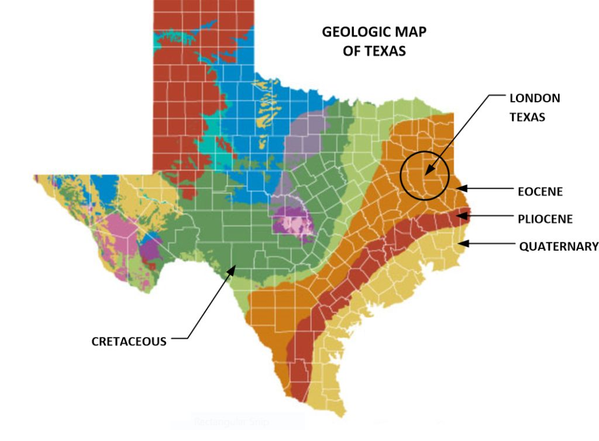
The Hahn’s, noticing that this weathered rock had petrified wood protruding from it, went and collected the stone. Like anyone else, once they saw the wood protruding out of the rock, they proceeded to break the wood free of the rock. As such, they broke the stone open, exposing what was clearly a hammer head affixed to a wooden handle. Thus, the tale of the so-called “London Hammer” artifact was born.
Battle Lines are Drawn
Well, we cannot have our nice ordered life thrown out of kilter, now can we? “Everyone knows” that a metal hammer cannot possibly be found within a rock. Most especially within a rock that is many tens of millions of years old. Thus, we have the OOPART presented; an object that is impossible to explain away using conventional explanations.
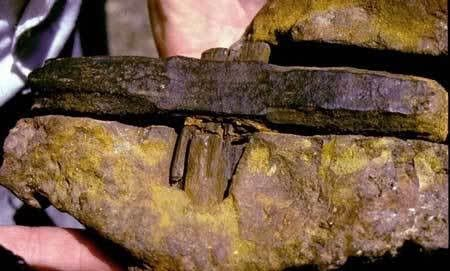
However, that doesn’t stop the Scientific Statists. They hurriedly hopped up upon their great white horses and began to beat the drums loudly. They shouted “This is just an ordinary hammer. The age of the rock is incorrect. Everything else is nonsense.” They went to great lengths to explain this object away. However, they tend to miss the obvious.
My definition of scientific statism;
A concentration of a set scientific theory in the hands of a closed elite group of people. Often they have direct ties to a highly centralized government. To alter or change that theory to revise it to meet new discoveries or data often requires government derived politics and peer-group approvals.
They failed to study the manufacturing process. In this particular case, to the statist investigators, a steel is “just” a steel. Wood is just a “typical ordinary” wood. A shape is just a shape. A hammer is “only” a hammer. There is nothing else that be derived through observation of composition, shape and shape.
They are wrong. There are many things that can be learned through study of this object. Most notably HOW the hammer HAD to be made tells us a great deal about the hammer itself.
Thus, this particular post…
There are metals, and there are steels and there are “high end” specialty grade materials. Utility steel is made using the most common and easiest processes. More durable and corrosion resistant steels require extensive processes. They take time, are expensive and difficult to manufacture. In fact, many of the specialty steels were just being invented at the time of the discovery of this artifact.
How it was made is important.
Any hammer made out of metal would have been produced within a mold. The mold would have been used at a factory using the available technologies to make that particular composition of metal. Further, wood cannot be fossilized in less than one hundred years. (Maybe a few thousand years, yes. Not in a few decades.) Finally, radio carbon dating has limits that make dating this artifact impossible.
Ah, then we have the other extreme point of view.
In this opposing point of view, anything that does not fit the established narrative must fit snugly inside THEIR narrative. So as a result you have people who believe in “The Great Flood”, “Biblical Historical Reality” and “Spacemen who came to Earth” using this artifact to justify their versions of reality.
I counter that the reality is somewhere between the never-changing very-organized world of the (government-sponsored) scientific statist and the out-of-the-mainstream alternative “fringe” theorists. I do not know what the truth is. Both could be correct, and both could be wrong. One could be correct while the other could be very wrong.
I counter that reality is not at all what we think it is. As such, this object can be used as a “sign post” to show us the way towards the true reality. (Whatever it may be.)
"Always be suspicious of those who pretend to know it all, claim their way is the best way and are willing to force their way on the rest of us." -Walter E. Williams
The Arguments
In almost every OOPART object, the process is always the same.
An object is discovered that does not fit the established narrative. People, often well-intentioned, but lacking in resources try to come up with answers and theories to try to explain the object. They announce their ideas to the public. The public responds with ridicule, and a handful of scientific statists work hard at denouncing the theories.
That is certainly the case with the London Hammer.
What we know of the Surrounding Rock
The first place we need to look at is the rock strata where the artifact originated from. Unfortunately, there is confusion as to the age of the rock strata where the hammer was found. Here is a quote from a scientific statist attacking the evolving theory related to the age of the rock found;
“A report in Creation Ex Nihilo (Mackay, 1983) stated the hammer was "in limestone dated at 300 million years old" (which would make it Pennsylvanian). A subsequent CEN article (Mackay, 1984) stated that the hammer was in "Ordovician rock, supposedly some 400 million years old" (although that age would make it Devonian, not Ordovician). In yet another CEN report (Mackay, 1985) stated, "the rocks associated with the hammer are supposedly some 400-500 million years old" (which would include part of the lower Devonian, all of the Silurian, and most of the Ordovician Period). Baugh and others (Wilson and Baugh, 1996) continued to claim the rock was in Ordovician or "Ordovecian [sic]" rock, even after researcher John Watson, according to Helfinstine and Roth (1994) pointed out that the rock outcrops at the Red Creek site were actually Lower Cretaceous (Hensell [sic] Sand Formation), to which they ascribed (incorrectly) an orthodox age "near to 135 mybp."” - Glen J. Kuban
Where is a good geologist around when you need him?
To me, this all looks more than just a little silly. It is like a man going to eat dinner at an expensive restaurant, and gets up screaming and throwing plates about and yelling at the waiter simply because his toothpick is broken. Ya, it is broken, and the point is what? In this case, yes, there are different dates. What does this prove, or show? Why, it only shows that the theories evolve over time.
That’s a good thing, right?
Anyways, does it really matter? If you left the cake out in the rain, would it matter if it were out for one week or one year? Or, a decade? After a point of time, the relative value of the article no longer becomes an issue. A wet cake that is one year old as opposed to a wet cake that is ten years old has the same value. Which is… absolutely worthless.
Now, based on data from the GIS database, most of the strata around the London, Texas area are associated with the Eocene. This is a time period that is from 33 to 56 million years ago.
But, what does this mean?
Who’s to say that the rock was formed just exactly where it was picked up, or that it traveled along the water and fell from the nearby water? Who’s to say that some wandering native Indian didn’t pick up the rock and carried all over Texas as a good luck charm, and dropped it when he encountered a rattlesnake? (Which would have been either a Caddo, Atakapan, or a Tonkawa Indian.)
We just don’t know.
Whenever you encounter an odd object, you need to study it just as it is found. That is not always possible. In the case of this artifact, it was removed from where it was found, broken open in place, and the parts of interest were returned home.
If we had studied the area of whence it was found we would be able to make a determination as to how this object became encased in stone. We could determine, for instance, how a fifty-year-old hammer (or so) could get encased inside of clay, and then come up with theories on how the clay turned into stone. We could see the geology of the strata that it was removed from. We could identify various aspects of the material that surrounds the object, instead of saying that it was found in a rock outside of London, Texas.
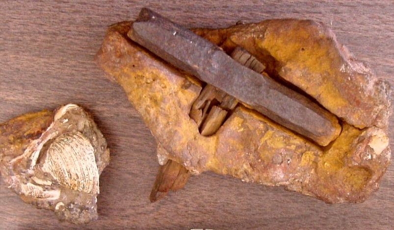
London Hammer Object. (Image Source)
All we know is that the rock was nearly identical to the nearby strata. (If not absolutely identical.) As such, give it’s placement, it is assumed to tumble out of the strata as some point in time, and was picked up at a place not too far from whence it has been entombed. All of which is a pretty reasonable assumption.
Don’t you think?
Age
For our purposes, let’s simply keep with the standard narrative and state that the regional rock was “old”. For Pete’s sake the hammerhead does look ancient, doesn’t it? It is not your typical rusty hammer sitting in the basement. (Hint; the way metal corrodes can tell us quite a bit. Just like how a dead body decays. Ever watch the television show “The Forensic Files”?)
The appearance hasn’t changed much since it was discovered. How a scientific statist can look at this object and say that is a normal contemporary hammer that is only a few decades old just boggles my mind.
Have they EVER been to a junk yard?
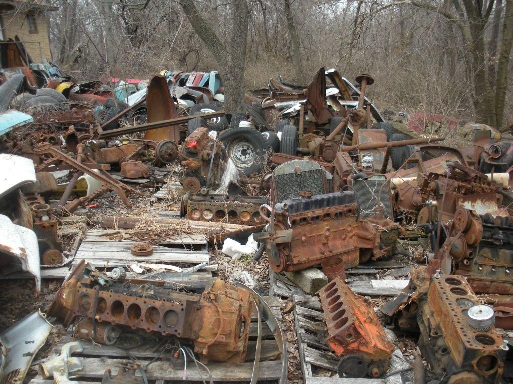
While the London Hammer does appear “old”, it more accurately appears “ancient”. The photo of a junkyard above shows the rust and weathering effects of some fifty years exposed to the elements. In any and all events, the hammer appears much older than the fifty year old metal in the photo above.
Further, we can elaborate and say that the rock surrounding the hammerhead appears older than 500 years, and thus predates the production of any conventional mining hammer. Thus, unless someone can prove that native Indians used similar hammers, we can say that the object appears to be an OOPART were it to come from the surrounding strata.
It could be as old as 33 million years if we date to the youngest strata that are found in the area. Or, we could date to and age of 56 million years if we date to the oldest strata in the local area. We could, if we wanted to, point to older outcrops scattered all through Texas and lay claim to various other dates. (Which is what has often been done previously.)
The date from the start of the Eocene to the end consists of a pretty long time period. A lot can happen in 23 million years. Since it is impossible to provide an exact date for this object, I suggest that we date it to the local strata found nearby. (We can always revise later on.) I suggest a date of 44.5 +/- 11.5 million years before present if we measure to the local strata.
Ai Ya! That is a HUGE span of time.
In so doing, we can further state that it appears that the rock belonged to the strata nearby, but that it was not found in it. Therefore, there is the possibility that the object might be in some kind of rocky inclusion formed amongst older strata formations. That inclusion could be as young as 1936, the date the rock was discovered.
At this point in time we can say that the object can either be... [1] contemporaneous to 1936, or [2] an OOPART ancient to 44.5 +/- 11.5 million years before present.
What we can do is study the object
The object in question is a hammer.
As such, it has a metal head that is used to pound or hit an object using muscular force. It also has a handle that appears to be made out of some kind of wood. The handle is broken. We do not know it’s true length. The material in it is fossilized. The design and shape of the hammer can also tell us things about the purpose of the hammer and what it was used for. Within the little of what we do know about this object, we can study the knowns, and come to some conclusions about how the hammer was made, what it’s purpose was, and maybe why it was found where it was.
What we do know is that the formation that it is in is actually stone. It is not hard clay, cement or some kind of tough dirt. The stone has the shells of aquatic creatures on it. The area that the rock was found has similar strata that are dated to around 40 million years ago when the area was under the water.
We know that it was found in the 1930’s in the Texas desert near a waterfall.
Studies on the Metal Used
To verify that the hammerhead was actually made of metal, the investigators cut into one of the beveled sides with a file. The bright metal in the nick is still there, with no detectable corrosion. The unusual metallurgy of the hammerhead is 96% iron, 2.6% chlorine and .74% sulfur.
- 96% – iron – Fe
- 2.6% – chlorine – Cl
- 0.74% – sulfur – S
- 0.0% – Carbon – C *** NO CARBON ***
This is not “typical” or “everyday” steel. This is NOT an everyday utility hammer. The hammer head is NOT made out of steel, which is something very special and very, very rare.
This is a specialty iron metal alloy that requires a very comprehensive and exacting equipment to produce.
The hammerhead material is uncommon and unique.
This is an odd chemical composition. In fact, it is an extremely odd combination, as for one to create a hammerhead of this style; one would have to have an unusual understanding of metallurgy, and the advanced technologies to forge it.
Typically, iron is a very soft metal, and it is mixed with small quantities of carbon to make steel. Yet this alloy has no carbon in it at all! There are other alloys, of course. Yet none of these other alloys match the composition of this odd hammer.
Why it was alloyed with chlorine and sulfur remains a mystery.
Alloying elements can play a dominant role in the susceptibility of cast irons to corrosion attack. Silicon is the most important alloying element used to improve the corrosion resistance of cast irons. Silicon is generally not considered an alloying element in cast irons until levels exceed 3%. Silicon levels between 3 and 14% offer some increase in corrosion resistance to the alloy, but above about 14% Si, the corrosion resistance of the cast iron increases dramatically.
The most common alloys with iron include the aforementioned carbon, silicon, manganese, chromium, nickel, copper, and magnesium.
If one wanted to make a strong and durable hammerhead, one would certainly use one of the more common materials to alloy with it. The use of the chlorine as an alloy is a significant mystery as it is difficult to mix and work into a usable alloy because chlorine is a strong oxidizing agent.
People, this is not “rocket science”.
Contemporaneous Hammer Design
- Iron is inherently corrodes.
- If you add carbon to it, you make it hard, and it becomes steel.
- But steel rusts just like iron does.
- So you can add chromium to it to prevent it from rusting.
But this is NOT the product development route used in this OOPART object. The makers of the hammer did not intend it to be hard-at-all-costs like steel. They wanted reasonably-hard with ductility. They wanted a corrosion-less utility grade hammer with ductile properties.
Unique and Unusual Hammer Design
- You take a soft ductile iron.
- You make it hard and durable by adding sulfur.
- Then during processing you add chlorine, and the material no longer rusts.
If you are going to make a common utility object (such as a hammer), you would make it using utility grade materials. You would not make it out of rare alloys that require specialized and expensive facilities and materials. The material composition is very odd. As such it is either suggestive of a special purpose, or a society that considers this particular material composition to be used in common utility.
I find it hard to believe that a Texan or a Mexican would treat a chlorine infused iron as a utility grade material.
Unusual Sulfur (S) Content
Sulfur is always present in iron ore in small quantities. Typically a small percentage of sulfur in both iron and steel is inadvertently introduced through iron ore and fuel (coal and coke). This smelting process results in the creation of small quantities of sulfur. To remove the sulfur is a very tedious and difficult process. Therefore, it is typically left in just as is.
Conventionally, the acceptable rates of sulfur in iron and steel are rather low. For instance, common alloy steels contain no more than 0.04 % Sulfur. Anything over 0.04% is considered excessive.
The percentage of sulfur in this hammer however is larger than an residual sulfur inclusion. Instead of 0.04% it is 0.74%. It is much, much higher.
When I make the statement that this sulfur percentage is rare, I mean that it is unheard of.
The closest examples that I can find regarding the use of sulfur in iron and steel is this…
Iron The effect of sulfur on gray cast iron (1) Because sulfide can be used as the base of eutectic graphite nucleation, and at the same time can inhibit the growth of eutectic cluster, but sulfur is an element that promotes the formation of white mouth in cast iron, therefore, an appropriate amount of sulfur is beneficial. From the perspective of reducing white mouth, when the sulfur content is 0.041%, the white mouth width is the smallest, whether it is inoculated or not, but the number of eutectic clusters is in an intermediate state. (2) The test of the influence of sulfur on the mechanical properties of gray cast iron shows that whether inoculated or non-inoculated cast iron, when the content of sulfur not more than 0.04%, the brinell hardness increases rapidly with the increase of sulfur content, when the content of sulfur more than 0.04%m the hardness is the increase slows down, when the sulfur content is 0.06%, there is 40% pearlite in the matrix, and when the sulfur content is 0.04%, the pearlite content is 100%. Regardless of the inoculated or non-inoculated gray cast iron, the tensile strength is SO, it reaches the maximum value between 0.04-0.06%, and the relative hardness reaches the minimum value, at the same time, experiments have shown that when the sulfur content of gray iron is less than 0.04%, it is difficult to make Sr-containing FeSi play a role in incubation.
Steel There are no commercially made steels, of any type, in any nation, that makes this composition with such a high concentration of sulfur. Here are some of the designations for high sulfur content in American steels; Free machining resulphurized carbon steels in the AISI/SAE 11xx series contain 0.08 % to 0.13 % Sulfur, but the AISI/SAE 12xx series carries up to 0.24 % to 0.33 % Sulfur (and 0.04 % 0.09 % P). Resulphurized stainless steels, such as types 303 and 416, contain up to 0.35 % Sulfur. And, that’s about it folks.
Those stainless steels that are used all over the world have high sulfur content. However, this hammer has double that sulfur content. It is extraordinary. And it isn’t even a steel.
We we do know is that the hardness of iron increases rapidly with an increase in sulfur content. Thus, given [1] that this is an iron with no carbon, and [2] that the percentage of sulfur is extraordinarily high, we must conclude that…
The sulfur was intentionally added to make the iron very hard.
Intentional Metallurgy
This strongly suggests that the percentage of sulfur was increased intentionally.
While not commercially used in the manufacture of irons, we know what happens when it is added to steels.
Many steels are intentionally resulphurized to allow for post casting machining. It allows for proper chip formation. Thus, the parts are easier to cut and shape on a lathe.
Resulphurization is normally performed in the steel teeming ladle. It is added under strict quality controls, and can be controlled relatively easily, though it tends to stink to high heaven. Typically, the sulfur is added as wires, blocks or sodium or in other forms.
The problem with steel with high sulfur content is that the sulphide inclusions lower weldability and corrosion resistance. The presence of sulfur may also lead to development of tear and cracks on reheating the steel. Once you add sulfur, your ability to weld decreases. So parts made out of high sulfur steels are intended to be standalone castings. They cannot be welded or have any other post casting process.
What the sulfur in the hammerhead tells us is that the head was cast and then machined. Because of the uniqueness of the material composition, it was used in a batch process. As such, the hammerheads were mass produced in a batch and machined to shape.
The Presence of Chlorine (Cl)
Another curious aspect of this hammerhead is the percentage of chlorine in it.
The addition of chlorine is used to improve the “stainless” properties of corrosion-less steel. Typically, one can expect around 12% of Chlorine to be present in a stainless steel. However, the chlorine levels in this metal object aren’t that at all. It is only 2.6%.
The use of Chlorine during the melting processes improves the passivation of the iron. This is something that has not been well studied, and it is something that we learn from this OOPART.
Passivation, in physical chemistry and engineering, refers to a material becoming "passive," that is, less affected or corroded by the environment of future use. Passivation involves creation of an outer layer of shield material that is applied as a microcoating, created by chemical reaction with the base material, or allowed to build from spontaneous oxidation in the air. As a technique, passivation is the use of a light coat of a protective material, such as metal oxide, to create a shell against corrosion. Passivation can occur only in certain conditions, and is used in microelectronics to enhance silicon. The technique of passivation strengthens and preserves the appearance of metallics. In electrochemical treatment of water, passivation reduces the effectiveness of the treatment by increasing the circuit resistance, and active measures are typically used to overcome this effect, the most common being polarity reversal, which results in limited rejection of the fouling layer. Other proprietary systems to avoid electrode passivation, several discussed below, are the subject of ongoing research and development. -Wikipedia
All the evidence points the to Chlorine to be used in a very reactive process during the melting of the iron ore. This resulted in substantive anti-corrosion properties to the iron without the addition of carbon, or chromium.
I have yet to find a standardized SAE or related standard that calls out such an odd percentage of chemicals in either an alloy of steel or an alloy of iron.
What the reader needs to understand is that in our reality everything is standardized. That plastic in your microwave is specified by standard and meets testing requirements by government approved testing labs (UL, ESL, NOM, and CSA for example.) Steels, aluminum, and all metals are made to exacting specifications and tested as such. Factories do not go “hog wild” and develop their own formulations “willy nilly”. They use handbooks and select the best alloy for the application in question. These handbooks, notes, and rules have been honed over the centuries since the Industrial Revolution. Every material formulation is use today has an identification number, a test specification, and manufacturing protocols.
While it is true that they might have been some early formulations developed before the standards were released and set in place, it is unlikely that they would do so using the materials in question. Chlorine is a very difficult material to work with. It requires very elaborate and specialized equipment. There would be very exacting specifications for this material were it to be commercially viable.
You ever look at the appliances in your home, the cellphone, and the electronics? Do you know what the ESL mark means, the FCC mark, and the UL mark means? They all mean that the design, systems, production, and material specifications are all safe and approved for use by the public. If this hammerhead was made during this last century, it would have been made to commonly available metal standards.
That means that the zero carbon iron was hot forged, possibly oil quenched, and heat treated. If it does not fit the known technology of the 1800’s then it truly is an OOPART.
Why not Chromium (Cr)?
Well, for starters… there isn’t any carbon in it. It’s not a steel.
It’s an iron alloy.
Duh!
It’s a common enough misunderstanding. A young “wet behind the ears” high-school know it all pops in with a Holier-than-thou attitude and says that somehow I am mistaking the chemical composition.
Without carbon, chromium isn’t going to be of much benefit as an alloying element. Go enroll in university and take a few classes in basic metallurgy. The secret is in the carbon.
DUH!
- Chromium in Carbon, Alloy and Stainless Steels is NOT …
- Know Your Metals: Carbon Steel vs Stainless Steel …
- Carbon Steel Vs. Stainless Steel: An In-depth Analysis …
- The Role Of Chromium In Stainless Steel | Stainless Steel …
- Chromium in Steels – IspatGuru
Chromium is critical in the manufacturing of stainless steel.
Most stainless steel contains about 18 percent chromium; it is what hardens and toughens steel and increases its resistance to corrosion, especially at high temperatures. The chromium oxidizes quickly to form a protective layer of chromium oxide on the metal surface. This oxide layer resists corrosion, while at the same time prevents oxygen from reaching the underlying steel. Other elements in the alloy, such as nickel and molybdenum, add to its rust-resistance.
Oddly, the material has no chromium in it,
Which is WHY this particular post was written.
But let’s talk about steel…
…You know, if there was carbon in the alloy…
…which there isn’t…
…but what the fuck….
Eh?
The dominant corrosion-free iron in use today is a steel using a percentage of chromium.
The corrosion resistance of austenitic stainless steel is mainly due to the fact that…
… chromium in stainless steel promotes the passivation of steel…
… and maintains the steel in a stable and passive state under the action of meeting material.
In austenitic stainless steel, chromium is an element that strongly forms and stabilizes the ferrite, narrowing the austenite zone, as the content of the steel increases, ferrite (δ) can appear in the austenitic stainless steel Organization, research shows that in chromium-nickel austenitic stainless steel, when the carbon content is 0.1% and the chromium content is 18%, in order to obtain a stable single austenite structure, the minimum nickel content is required, about 8%.
In this regard, the commonly used 18Cr-8Ni chromium-nickel austenitic stainless steel is the most suitable one for chromium-nickel content.
Chromium steel : According to IFL SCIENCE, an invention that dominated the late-20th Century was in fact made 1000 years ago, not 100 years ago as historians originally thought. It turns out that Chromium steel (which is very similar to what we now consider tool steel) was actually made in Persia, not Europe, according to a new study led by UCL researchers. The discovery was published in the Journal of Archaeological Science, and was supported by a number of medieval Persian manuscripts. Dr. Rahil Alipour (UCL Archaeology), who was the lead author on the study, said, ‘Our research provides the first evidence of the deliberate addition of a chromium mineral within steel production. We believe this was a Persian phenomenon.’ As well as providing the only known evidence of chromium steel dating back to the 11th century, it is said that this research also provides a chemical tracer that could help identify crucible steel artefacts in museums or trace archaeological collections back to their origin in Chahak or the Chahak tradition. According to several historical manuscripts from the 12th to the 19th century, Chahak was once famous for its steel production. Although it is the only archaeological site known to exist in Iran at that time, its location is still a mystery, as several villages have the same name. Today, stainless steel plays an important role in our lives. The use of steel mixed with chromium and other metals provides protection against rust, which means it is used in ways that could never have been imagined in the past. It was originally thought that this way of using steel was first discovered in the 1800’s and became more popular during the mid-19th century. However, evidence proves that advanced steelmaking actually came into play much earlier. Previous discoveries of trace amounts of chromium in ancient steel weapons and tools have often been thought to be an accident. But according to Dr. Rahil Alipour, the Persians were steelmakers for hundreds of years and were very adept at it. The evidence doesn’t just come from the ancient steel itself. It is also apparent in a manuscript titled “al-jamahir fi Marifah al-Jawahi” (‘A Compendium to Know the Gems’, 10th-11th c. CE), written by the Persian polymath Abu-Rayhan Biruni. This manuscript was particularly important to researchers, since it provided the only recipe known for making steel in a crucible. It is also the only existing document dating back to an era in which steelmakers were largely illiterate. Professor Marcos Martinon-Torres (University of Cambridge), the last author on the study, said that the process of identification can be quite long and complicated. Mainly because the manuscript is recorded in a different language, but also because the terms used to describe the technological processes or materials may not be in words that we would use today. Also, at that time, writing and education were usually reserved for the social elites. You wouldn’t usually find a tradesman who was literate, which means there may have been errors or things missing from the text. Abu-Rayhan Biruni (author of the manuscript) referred to a vital ingredient for steelmaking. But, due to the passage of time, it has been unclear to scholars which ingredient he was referring to. However, in the Journal of Archaeological Science, Dr. Rahil Alipour argues that the vital ingredient was chromite. He says, ‘Our research provides the first evidence of the deliberate addition of a chromium mineral within steel production.’ 1000 years ago, rust resistance wasn’t important in the way that it is today. At that time, it was more important that the goods made from steel (such as weapons for soldiers) were sturdy rather than rust-resistant. However, if the ancient method had been preserved, modern steel-making techniques could have been developed long before they eventually were, in the 19th Century. -Chromium Steel was NOT Invented in Sheffield: Persians Added the Element to Steel 1,000 Years Before
In austenitic stainless steels, with the increase of chromium content, the formation tendency of some intermetallic phases (such as δ phase) increases.
When the steel contains molybdenum, the chromium content will increase and x will form equal, as before as mentioned, the precipitation of σ, x phase not only significantly reduces the plasticity and toughness of the steel, but also reduces the corrosion resistance of the steel under certain conditions.
The increase of the chromium content in the austenitic stainless steel can make the martensite to hydrocarbon temperature (Ms ) Decreases, thereby improving the stability of the austenite matrix. Therefore, high-chromium (for example, more than 20%) austenitic stainless steel is difficult to obtain a martensite structure even after cold working and low temperature treatment.
Chromium is a strong carbide forming element, and it is no exception in austenitic stainless steel.
Generally comes, as long as the austenitic stainless steel pipe maintains a complete austenite structure without the formation of delta ferrite, etc., only improves content of chromium will not have a significant effect on the mechanical properties, and chromium will affect austenite.
Chromium improves the performance of steel’s oxidation resistance medium and acid chloride medium; under the combined action of nickel, molybdenum and copper, chromium improves the resistance of steel to some reducing media, organic acid, urea and alkaline media; chromium also improves the resistance of steel to localized corrosion, such as intergranular corrosion, pitting corrosion, crevice corrosion, and stress performance under certain conditions.
It has the greatest impact on the sensitivity of austenitic stainless steel intergranular, the factor is the carbon content in the steel, and other elements.
In the MgCl2 boiling solution, the role of chromium is generally harmful, but in aqueous media containing Cl- and oxygen, Under high temperature and high pressure water and stress corrosion conditions with pitting corrosion as the origin, increasing the chromium content in the steel is beneficial to stress corrosion resistance. Chromium can also prevent austenite stainless steel and alloys that are prone to appear between the grains due to the increased nickel content. The tendency of type stress corrosion, the effect of chromium on stress corrosion of open causticity (Nq0H) is also beneficial.
Sanity Check
One way that we can prove that this hammer was contemporaneous to 1933 or earlier is to identify a local factory producing chlorine infused white iron. Then, from there, we could identify the mold shops that would turn the ingots into utility grade tools.
The closest is Texas Iron and Steel. But, they are a new factory, and they were established in 1990. At that, however, they do not work with any kinds of chlorine infused iron, as it is far too exotic a material to work with. To see what kinds of iron were produced or manufactured prior to 1933 that might be applicable to this hammer, we need to look deeper.
Now, during the American civil war there were many iron factories and steel mills in the South. They produced many types of carbon steels and decorative iron used in grillwork’s, and such things as bathtubs. For instance, there was the Birmingham Iron and Steel Company. There was the Sloss Furnace Company, and The Tennessee Coal, Iron, and Railroad Company (TCI), from the Sequatchie Valley near Chattanooga, Tennessee. Others included The Woodward Iron Company, Pioneer Mining and Manufacturing Company, and The DeBardeleben Coal and Iron Company. They maintained the “cutting edge” iron and steel mill technology at that time.
To further investigate the potential of factories to make this type of specialized white iron, the reader is encouraged to go to the “Foundry Database” and point out which foundry had the ability to cast such a unique hammerhead prior to 1933 This is of course, as comprehensive list as you can get today. As such, however, it is not 100% complete.
Since the technologies used to make chlorine infused iron, are rather elaborate, only the larger and more established mills would even have a “shot” at. With this in mind, the reader is encouraged to study the following mills. I have not been able to identify any one that had that ability. Maybe you could. Seriously, go for it.
A&N –
A&W Mfg. Co. – Chicago IL
Ahrens & Arnold – Wapakoneta OH
Abbott & Lawrence – Philadelphia PA
American Brass & Iron – Oakland CA
The Ace Co. – St. Louis MO
Adams –
The Adams Co. – Dubuque IA
Adams & Britt – Cincinnati OH
ADCASCO – Goshen IN
Advance –
Aga Stove Co. – Elizabeth NJ
A.G.P. – Columbus OH
A.H.W. & CO. – Pittsburgh PA
Alabama Pipe Company – Anniston AL
The Alb Co. – Bellville IL
Albert Mfg. Co. – Los Angeles CA
Albert & Zola Mfg. Co. – Los Angeles CA
AMICO –
A.M. Andersen & Co. – Chicago IL
Alfred Andresen & Co. – Minneapolis MN
Arcade Mfg. Co. – Freeport IL
Arcole Foundry – Buffalo
Arnold & Bacon – RI
A.S.& N.W. Co. – Philadephia PA
Atlanta Stove Works – Atlanta GA
The Atlas-Ansonia Co. – New Haven CT
Attalla Fdy & Mch Co. – Attalla AL
Auger & Lord Chester – CT
Aunt Jemima Meal –
“Axford” – San Francisco CA
B&P –
Baccellieri Bros. Mfg. Co. – Philadelphia PA
L.S. Bacon –
A. Baldwin & Co. – New Orleans LA
C.W. Ball & Co. – Cincinnati. OH
Ball & Davis – Cincinnati. OH
Ballard & Ballard Co., Inc. – Louisville KY
E.T. Barnum Iron Works – Detroit MI
Barrows Savery & Co. –
Barstow Stove Co. – Providence RI
J.G. Baxter – Louisville KY
Baxter Kyle & Co. – Louisville KY
Baxter & Davis – Cincinnatti OH
Baxter & Fisher – Louisville KY
B.E. & Co. –
E.L. Beale – Springfield OH
W.E. Beckmann B. & C. S. – St. Louis MO
Belknap Hardware And Mfg. Co. – Louisville KY
Joseph Bell & Co. – Wheeling WV
C.S. Bell Co. – Hillsboro OH
Joseph Bell & Co. – Wheeling WV
“Belmont” – Louisville KY
Albert Benchoff – Menard TX
“Best Made” – Chicago IL
Beveridge Mfg. Co. – Baltimore MD
Birdsboro Casting Co. – Birdsboro PA
Birmingham Stove & Range Co. – Birmingham AL
Blackhawk Product –
Blacklock Foundry – South Pittsburg TN
Blue Valley Fdry. Co. – Kansas City MO
Bluff City Stove Works – Memphis TN
S.H. Boardman – Boston MA
Bonnet, Duffy & Co. – Quincy IL
Boothmac –
Bowers & Snyder – Richmond VA
A. Bradley & Co. – Pittsburgh PA
Brendlinger & Co. – Boyertown PA
Bridge Beach & Co. – St. Louis MO
Bridgeford & Co. – Louisville KY
Brighton –
Brilliant –
Brinkmeyer & Co. – Evansville IN
Britt & Folger – Cincinnati OH
Brooklyn Broiler –
Brown-Bowman – Troy NY
Bennet, Sloan & Co. – New York NY
Buck & Wright – St. Louis MO
Francis Buckwalter & Co – Royersford PA
Bussey Clexton & Co – Troy NY
Bussey & McLeod – Troy NY
Buxton Co. – Milwaukee WI
C. Mfg. Co. – Rocky Hill CT
CA –
Charles Cage – St.Louis MO
Cahill Iron Works – Chattanooga TN
Campbell Foundry Co. – Harrison NJ
Cannonball Ware –
Canton Cake Griddle Co. – Canton OH
F.S. Carbon Co. – Buchanan MI
Carlisle –
Cast Iron Products Inc. – Richmond VA
Central Oil & Gas Stove Co. – Gardner MA
C.F. & M. Co. – Providence RI
Job Chandler – New York NY
Chattanooga Roofing And Foundry Co – Chattanooga TN
Chemung Hollow Ware Works – Elmira NY
Chicago Hardware Foundry Co. – North Chicago IL
CLENO –
Cleveland Stove Works – Cleveland TN
Cline & Co. – Philadelphia PA
Club –
C. N. & CO. –
Cochran, Hackett & Co. – Louisville KY
Colbertson & Fisher Foundry – Wheeling WV
The Columbus Hollow Ware Co. – Columbus OH
Columbus Iron Works – Columbus GA
Comstock & Co. – Quincy IL
C.W. & C. – Conklin, Willis & Co. – Baltimore MD
COOK N TOOLS – Tulsa OK
Corning & Goewey – Albany NY
A.&J. Cox – Philadelphia PA
Cox Foundry – Atlanta GA
Cox, Whiteman & Cox – Philadelphia PA
M.H. Crane & Co. – Urbana OH
Wm. M. Crane Company – New York NY
Crescent Foundry Co. – St. Louis MO
W.P. Cresson – Philadelphia PA
Cresson, Stuart & Peterson – Philadelphia PA
S.J. Creswell – Philadelphia PA
L.B. Crittendens –
Cruso –
Culbertson & Fisher Foundry – Wheeling WV
John P. Daleiden Co. – Chicago IL
Dandy –
Dangler –
J. M. B. Davidson & Co. – Albany NY
F.P. Davis & Co. – Cincinnati OH
W.C. Davis & Co. – Cincinnati OH
J.H. Day & Co. – Cincinnati OH
Israel Derr – Hamburg PA
Detroit Iron & Brass Mfg Co. – Detroit MI
Detroit Stove Works – Detroit MI
Dighton Furnace Co. – Taunton? MA
Dixie Foundry Co. – Cleveland TN
Dixie Mfg. & Sales Co. – Kansas City MO
G. W. Dodsons –
I. Droege & Co. – Covington KY
Durawear –
Eagle – Hope AR
Eagle Foundry – Greensboro NC
Eagle Stove Works – Rome GA
Early Fdy. Co. – Dickson PA
Eclipse – St. Louis MO
E.F. Co. –
Wm. Enders – St Louis MO
“ERIE” – Erie PA
The Estate Stove Co. –
Eureka Griddle –
Excelsior Mfg. Co. (G.F. Filley) – St. Louis MO
Excelsior Stove & Mfg. Co – Quincy IL
Excelsior Stove Works – Quincy IL
Fair, Day & DeKlyne – Knoxville TN
Falkirk –
Famous Stove Ware –
Fanner Mfg. Co. – Cleveland OH
Favorite Stove And Range Co. – Piqua OH
“THE FAVORITE” – Columbus OH
“FAVORITE COOK WARE” – Chicago IL
“FAVORITE PIQUA WARE” – Piqua OH
F B & Co –
“G. F. Filley” – St. Louis MO
R.R. Finch s Sons – New York NY
Fischer, Leaf & Co. – Louisville KY
B. Fisher. Star – Foundry – Wheeling WV
Fisher Bros. & Co. – Lewisville KY
Florence Machine Co. – Florence MA
Ford & Co. – Concord NH
Foster Stove Co. – Ironton OH
Foxell & Jones – Troy NY
Foxell, Jones & Millard – Troy NY
Foxell, Woodnorth & Jones – Troy NY
Francis, Buckwalter & Co. – Royersford PA
Freidag Mfg. Co. – Freeport IL
Frimaster The Kitchen King – Lansdale PA
F.S. Co. – Reading PA
Fuller, Warren & Co – Troy NY
A. J. Gallagher – Philadelphia PA
Garfield Cake Griddle Mfg Co. – Boston MA
Garland Ware – The Michigan Stove Co. – Detroit MI
Gasco –
E.B. Gates –
Gay Nineties Wafer Iron Company – Columbus GA
Geddes & Marsh – Lewisburg PA
General Housewares Corp. (GHC) – Sidney OH
Gibson & Lee Mfg. Co. – Chattanooga TN
Gibson Love Mfg. Co. – Chattanooga TN
The Gladd Co. – Minneapolis MN
G.T. Glascock & Son(s) – Greensboro NC
J.A. Goewey (John A. Goewey) – Albany NY
Gene Goff – Dallas TX
Graff & Mugun – Pittsburgh PA
M.N. Grasby – Lacrosse WI
Gray & Dudley Co. –
Greenwood Stove Co. – Cincinnati OH
J. Greer & Co. –
Greer & King – Dayton OH
Griswold Mfg. Co. – Erie PA
G & S Metal Products – Cleveland OH
H & Co. Limited – Pittsburgh PA
William Hailes – Albany NY
J. Hamilton & Co. – Wheeling VA
Hamilton & Clark – Wheeling VA
Hanks – Rome GA
Harbster Bros. – Reading PA
Harco –
Hardwick Stove Co. – Cleveland TN
Hare, Leaf & Co. – Louisville KY
John B. Harker & Co. – Minneapolis MN
The Harker Mfg. Co. – Columbus OH
Chas. L. Hartmann –
Hartue – Wiley Co. – Pittsburgh PA
Harwi –
Haslet, Flanagen & Co. – Philadelphia PA
Haverty s –
Frank W. Hay & Sons – Johnstown PA
“Hearthstone” – Sidney OH
Hemenway s –
HF Co. – Highland Foundry Co. – Boston MA
Hibbard, Spencer, Bartlett & Co. – Chicago IL
Higgins, Mcloud & Martin – Troy NY
Highland Foundry Co. – Boston MA
Hill Whitney Co. – Boston MA
Hinckley & Rollins – Bangor ME
Hollands Mfg. Co. – Erie PA
Home Comfort – The Malleable Iron Range Co. – Beaver Dam WI
The Home Griddle Mfg. Co. – Buffalo NY
Hunger Mfg. Co. – Erie PA
The Hunter Sifter Mfg. Co. – Cincinnati OH
I.A.S. & Co. – Philidelphia PA
“Ideal” –
Illinois Griddle Co. – Morris IL
Indiana Stove Co. – IN
Indianapolis Stove Co. – Indianapolis IN
A. Ingraham & Co. – Troy NY
“I.O.A.” –
Iowa Griddle Co. – Sioux City IA
Iron Age –
Iron Craft – Freedom NH
Ironwood Cookware – Otter Lake MI
Irwin Mfg Co. – Louisville KY
Jagger, Treadwell & Perry – Albany NY
E. A. Jeffrey – New York NY
Jesup & Sterling – NY
Sherman S. Jewett & Co. – Buffalo NY
Jewett & Root –
J J C & R –
J.K. Jr. & Co. – Baltimore MD
John C. Johnson Co. – Birmingham AL
Jones –
The Keeley Stove Co. – Columbia PA
Keen & Hagerty – Baltimore MD
Kenton Brand – Kenton Harware Company – Kenton OH
Kentucky Griddle Co. – Lexington KY
Kentucky Stove Co. – Louisville KY
J. Kern Jr. & Co. – Baltimore MD
Keystone Food Chopper – Boyertown PA
C. Kieffer – Lancaster PA
King Stove & Range Co. – Sheffield AL
Kingery Mfg. Co. – Cincinnati OH
A. Klauer – Dubuque IA
Klyne – Knoxville TN
Knox Stove Works –
Knoxville – B & I – Foundry – Knoxville TN
S S Kresge Company –
Landers Frary and Clark – New Britain CT
Langdon –
Lanier & Driesbach – Cincinnati OH
Lawler Machine & Foundry Co. – Birmingham AL
Lee Hardware – Salina KS
Lehigh Stove Co. – Lehighton PA
Leibrandt & McDowell Stove Mfg. Co. –
L H & F Co. – New York NY
J.S. Lithgow – Louisville KY
Lithgow Mfg Co – Louisville KY
Littlestown Hdwe & Fdry Co Inc. – New York NY
Lodge Mfg Co. – South Pittsburg TN
The W.J. Loth Stove Co. – Waynesboro VA
Lutton, Bradley & Co. – Cincinnati OH
MacDonald –
Magee Furnace Co. – Boston MA
Majestic Mfg. Co. – St. Louis MO
Makomb –
March, Sisler, & Co – Lawrenceville PA
Marietta C. Co. – PA
Marion Stove Co.(or Works) – Marion IN
Martin Stove & Range Co. – Florence AL
The Master Bake Pot Co. – Bloomfield NJ
Matthai, Ingram & Co. – Baltimore MD
McClure Bean Soup –
Medina –
Menard Mfg. Co. – Menard IL
M H & E Co. – Marietta PA
A. G. Miller – Minneapolis MN
M.J. Miller & Co. – Oneonta NY
Mission Foundry & Stove Works – San Francisco CA
Modern Fdy. & Mfg. Co. – Mascoutah IL
W.W. Montague & Co. – San Francisco CA
Montgomery Ward & Co. – Chicago IL
Morgan M F G. Co. – Kalamazoo MI
Mound City Foundry – St. Louis MO
Mt. Penn Stove Works – Reading PA
Mountain City Stove Co. – Chattanooga TN
NAC & Co. –
Nashville Casting Co. Inc. – Nashville TN
L.E. Nelson –
N. Nelson – Lacrosse WI
New England Butt Co. – Providence RI
New Era –
N & N Mfg Co – Bangor ME
Cha s Noble & Co. – Philadelphia PA
Nordic Ware – Minneapolis MN
North, Chase & North – Philadelphia PA
Norths, Harrison & Chase – Philadelphia PA
Noyes & Hutton – Troy NY
Noyes & Nutter Mfg. Co. – Bangor ME
W.J. Noyes – Albany NY
“NUYDEA” –
N.Y. Holloware Co. – NY
M.L. Nyberg & Co – Erie PA
A.T. Nye & Son – Marietta OH
Oberman s Perfection –
O Brien & O Brien – Chicago IL
Ohio Stove Co. – Portsmouth OH
Olde Ironsides –
O.P.& Co. – Orr Painter & Co. – Reading PA
J.F. Osborn & Bro. – Clarksburg WV
Otter River Foundry – Otter River MA
A. Overbagh – Hudson NY
“Ozark” – St. Louis MO
Pagoma – Omaha NE
Daniel E. Paris & Co. – Troy NY
Parisian L & D M.F.G. & IN. O. –
N. Patterson & Co. – Cincinnati 0H
Patterson & Co. – Gervais OR
Patton Mfg. Co. – Columbus OH
P&B Mf g Co. – Nashville TN
H.S. Pease – Cincinnati OH
J.S.&M. Peckham – Utica NY
Peerless –
Penn Mfg. Co. – Hulton PA
Perfection Waffle Baker –
Perin & Gaff Mfg. Co. – Cincinnati OH
C.P. Peterson – Richmond IN
G.H. Phillip s & Co. – Troy NY
Phillips & Buttorff – Nashville TN
Pitty Pat s Porch – Atlanta GA
Plymouth Iron Foundry – Plymouth MA
P&M Self Cooker – NY
Pocasset Iron Works – NY
Pomeroy, Peckover & Co. – Cincinnati OH
Portland Stove Foundry Co. – Portland ME
Portsmouth – Portsmouth OH
PPP –
PPS –
Prairie Flower –
Premium Hollow Ware – Richmond VA
Preston – Lowell MA
Primus –
Prizer-Painter Stove Works – Reading PA
P.S.F. Co. – Portland ME
P&W –
Pyne Hacket & Co. – Louisville KY
Q.M. Broiler –
R & Co. – Marrietta PA
Rainbow & Co. – Pittsburgh PA
S.H. Ransom & Co. – Albany NY
J.F. Rathbone & Co. – Albany NY
Raymond & Campbell – Middletown PA
R&E Mfg. Co. – New Britain CT
J.M. Read – Boston MA
W. Reed & Co. – Cincinnati OH
Reid s –
Renfrow Ware – Los Angeles CA
W. Resor & Co. – Cincinnati OH
“REV-O-NOC” – Chicago IL
Rex Mfg. Co. –
Richmond Stove Co. – Richmond VA
Ripley Cake Griddle Co. – Ripley OH
E. Ripley s – Troy NY
Ritch & Pidge Mfg. Co. – Fultonville NY
J. C. Roberts – Bedford PA
W.F. Robertson & Co. – Beverly OH
J.H. Roelker & Company – Evansville IN
Roelker Blount & Co. – Evansville IN
L.H. Rogan & Co. – Knoxville TN
Rome Hollow Ware & Stove Mfg. Co. – Rome GA
Rome Industries – Peoria IL
Rome Stove Works –
D. Root & Co. – Indianapolis IN
Roper – Rockford IL
Rosenbaum & Co. – Cincinnati OH
Roys & Wilcox Co. – Astberlin CT
RS Co –
S. Mfg. Co. – New York NY
Sampson & Tisdale – New York NY
J.A. Sandstrum – Portland OR
D.E. Sanford Co. – Los Angeles CA
Sanford & Clute – Schenectady NY
San Francisco Stove Works – San Francisco CA
Savery & Co. – Philadelphia PA
B.M. Savery – New York NY
Savery, Shaw & Co. – Albany NY
J. Savery s Son & Co. – New York NY
S.B. & Co. –
Scandinavian Importing Co. – Boston MA
SCF Co –
Schofield s – Macon GA
S.C.T. CO. –
H. Seabury – Albany NY
Selden & Griswold Mfg. Co. – Erie PA
Shaeffer Griddle Co. – Canton OH
Shantz & Keeley – Spring City PA
Shapleigh Hardware Co. – St. Louis MO
Shepard Hardware Co. – Buffalo NY
Sheppard – Philadelphia PA
Shinnick, Hatton & Co. – Zanesville OH
Shinnick & Co. – Zanesville OH
Shinnick, Woodside & Gibbons – Zanesville OH
Fred. L. Shoch – Philadelphia PA
“Sidney” – Sidney OH
Sidney Hollow Ware Co. – Sidney OH
Sidney M f g. Co. – Sidney OH
Silver & Co. –
E.C. Simmons – Simmons Hardware Co. – St. Louis MO
Jos Simpson – Columbus OH
Skinner Safety Kettle Co. – Erie PA
S M Co. – Pittsburgh PA
Smith, Francis & Wells – Springville (Chester Co.) PA
Smith & Seltzer – Philadelphia PA
W.B. Smith s –
So-Co-Op F dy Co. – Rome GA
South Pittsburg Hollow Ware Works – South Pittsburg TN
Southard, Robertson & Co. – New York NY
Southard & Co. – New York NY
S.P. & Co. –
S-P Co. –
S & P Co. – Philadelphia PA
D.R. Sperry & Co – Batavia IL
E. Spoors – New York NY
Springville Stove & Hollow Ware Works – Springville PA
“S.R. & Co.” – Chicago IL
S & T Co. –
Standard –
Standard Gas Equipment Corp. – New York NY
Standard Mfg. Co. – Monongahelia PA
Star Foundry – Wheeling VA
E. C. Stearns & Co. – Syracuse NY
Stewart –
F. M. Still – NY
Stove Co. – Scranton PA
Stover Mfg. Co. – Freeport IL
H. Strickland & Co –
Butler N. Strong – Chatham CT
Stuart Peterson & Co. – Philidelphia PA
J.A. Studabaker Hardware – Bluffton IN
Sullivan & Herdman – Zanesville OH
Superior Cleveland – Cleveland OH
Supreme Fdry-Mfg Co. – Belleville IL
Susquehanna Iron Works – Middletown PA
S.W. Co. – Philadelphia PA
Sweeney’s –
J.A. Talbo – Cassopoli MI
F L Tarbell Mfg Co – Chicago IL
Taunton Iron Works – Taunton MA
Tecumseh – Techmseh MI
Tennessee Agricultural Works – Nashville TN
Terstegge, Gohmann & Co. – New Albany IN
Texaloy Foundry – Floresville TX
Thomas, Roberts, Stevenson & Co. – Quakertown PA
Thompson & Parkins – Philadelphia PA
T.I.W. Co. –
Tremen & Bros – Ithaca NY
Triumph –
TRS & Co – Philadelphia PA
Trumbore Hromsco –
Tuthill & Avery – Easton MD
F.M. Van Etten – Chicago IL
Victor –
Vitantonia Mfg. Co. – Cleveland OH
Vollrath Mfg. Co. – Sheboygan WI
Vose & Co – Albany NY
Waffledog Corp. – Washington DC
Wagner Mfg. Co. – Sidney OH
Walker –
Geo. W. Walker & Co. – Boston MA
Wapak Hollow Ware Co. – Wapakoneta OH
Montgomery Ward –
Warnick & Leibrandt – Philadelphia PA
N. Waterman – Boston MA
W.B. Co. – Bangor ME
House Of Webster – Rogers AR
Weed & Cornwell – Savanna GA
H. Wells & Bro. – Martinsferry OH
Western Foundry – Leavenworth KS
The Western Foundry Co. – Chicago IL
Western Importing Co. – Minneapolis MN
Western Stove Mfg. Co. – St. Louis MO
Mrs. Wheelock s Wafer Irons – St. Paul MN
Thomas White – Quincy IL
Wilton –
W.I.R.CO. – Wrought Iron Range Co. – St. Louis MO
Witte Hardware Co. – St. Louis MO
W.M.C. Co. – William M. Crane Company – New York NY
Wolters & Bergerman – Pueblo CO
Wood, Bishop & Co. – Bangor ME
Wright & Bridgeford – Louisville KY
Wrightsville Hardware Co. –
W. S. & Co. Arcole Iron Works –
Canadian Sources
Provinces: NB=New Brunswick, NS=Nova Scotia, ON=Ontario, QC=Quebec
Amherst Foundry Co. – Amherst NS
A. Belanger Limitee – Montmagny QC
“Bhouka Grill” – Granby QC
Clement & Co. – Toronto ON
Coral – Granby QC
Eaton’s Housewares –
Eatonia Housewares –
Enamel & Heating Products Limited – Sackville NB
Fawcett’s Stove Works – Sackville NB
Findlay – Carleton Place ON
General Steel Wares – Toronto ON
Javelin – Joliette QC
L’Islet – L’Islet QC
Lisser –
Mayfair Housewares –
McClary’s – London ON
Menard & Cie – Montreal QC
James Smart Mfg. Co. Limited – Brockville ON
Taylor Forbes – Guelph ON
If the London Hammer was contemporaneous as the statists state, then one of the factories listed above would have a record of making it. They would have [1] a record and a [2] manufacturing procedure, as well [3] as the tooling to infuse chlorine into purified iron. This isn’t just paper records, boys and girls, this is hard equipment that you can walk up to and touch with your own hands. If the London Hammer is contemporaneous with 1933, then the equipment that made it would be available for all to see.
The reader must recognize that the hammers that you see in stores today, and the irons used during the American civil war are two completely different “animals”. They have decidedly different qualities. Not only in material composition, but in grain form, shape and density.
"All of the existing companies in Birmingham produced "pig iron," which was formed in molds laid out in a pattern resembling piglets nursing at the belly of a sow, hence the name. Pig iron has a very high carbon content and as a result is very brittle and difficult to work with and therefore has limited use in manufacturing. Steel is an alloy, or mixture, of iron and a small but crucial amount of carbon that (depending on the quality of the iron used) produces a highly workable metal that was more suitable for shaping into rails for the expanding railroad industry. Birmingham's local iron ore was high in phosphorus, which produced inferior steel." -Encyclopedia of Alabama
So, even if any of the mills were able to produce (by some miracle) chlorine infused white iron, the quality would be poor. There would be high percentages of carbon and phosphorous in the metals. Something that is not seen nor found in the London Hammer.
This tells us something significant. Any iron or steel produced prior to (say) 1900 would contain impurities. These impurities would be a “fingerprint” that could identify where the iron or material came from. The problem is that this London Hammer does NOT contain impurities, it has a fixed and homogenous composition.
It has no forensic “fingerprint”!
To really appreciate this discovery, one really needs to understand what iron and steel actually is, as well as to understand the difficulties in manufacturing the hammerhead that is found in the London Hammer. With that in mind, let’s cover this subject briefly…
Iron Alloys
Most utility tools in the world are made out of steel. Obviously there are variations in the types of steels. There are specialty materials that will prevent spark formation, and resist corrosion. Never the less, it is quite rare for a tool to be made out of a utility grade iron.
The alloy used in this hammer is known as “Alloyed Iron”. What is so darn confusing about the hammer is the material selection used. Why use such a hard alloy to manufacture, and one that has properties that don’t seem to fit the narrative of a simple “Mining hammer”? A mining tool made out of white iron instead of steel is unheard of. It really is!
"Not only was iron cheaper and easier to get than bronze, it also made better tools. With an iron sword, you could slice as well as stabbing with the point. Iron armor was lighter and stronger than bronze. Iron knives and scissors were sharper than bronze ones and stayed sharp longer. Iron fish-hooks were stronger and lighter and sharper than bronze or bone hooks. Iron cooking pots weighed less, got hot faster, and held heat better than clay pots. Iron bars were stronger and could hold more weight. In India, by the 1000s AD architects were even making iron beams to hold up the roofs of big temples." -History of Iron
Let’s take a moment to investigate this alloy.
In general, the term “cast Iron “ is a generic term that is used to define any iron alloy that does not have the presence of carbon in it. The six types of “cast iron” are [1] gray iron, [2] ductile iron, [3] compacted graphite iron (CGI), [4] malleable iron, [5] white iron and [6] alloyed iron. The “London Hammer” has a hammerhead that is made out of “alloyed iron”.
Basics
The basic strength and hardness of all iron alloys is provided by the metallic structures containing a crystalline allotropic form of carbon. Which is what makes it really difficult to track from whence this material came from. Almost all irons have some graphite inside of it. The carbon graphite gives the iron the properties that we so know and love about steel.
By controlling the type of carbon, and how it is added, one can significantly improve and enhance the properties of the metal. It can range from those of soft, low-carbon steel (18 ksi/124 MPa) to those of hardened, high-carbon steel (230 ksi/1,586 MPa). Indeed, the modulus of elasticity varies with the class of iron, the shape of the cast part (sphericity) and volume fraction of carbon inside of it. All of which is a knowledge base that helped to greatly expand the steel industry in Pittsburgh and the Ohio valley.
Other minerals can be added to iron to add other properties as well…
"Huge amounts of iron are used to make steel, an alloy of iron and carbon. Steel typically contains between 0.3% and 1.5% carbon, depending on the desired characteristics. The addition of other elements can give steel other useful properties. Small amounts of chromium improves durability and prevents rust (stainless steel); nickel increases durability and resistance to heat and acids; manganese increases strength and resistance to wear; molybdenum increases strength and resistance to heat; tungsten retains hardness at high temperatures; and vanadium increases strength and springiness. Steel is used to make paper clips, skyscrapers and everything in between." -It's elemental (Iron)
Now all this excitement about the hammer not corroding is really “much a do about nothing”. So what? It is precisely because of their relatively high silicon content, cast irons inherently resist oxidation and corrosion. Until you add carbon…then it starts to rust. So that is why Stainless Steels were such a big thing back in the day. It was a method by which carbon could be added to the steel, to make it hard, and a process put in place to reduce corrosion.
Heat Treatment
Properties of the cast iron family can be adjusted over a wide range of various alloys and can be further enhanced by heat treatment. This heat treatment is done in different ways, though I am most familiar with oil quenching under pressure. You cart the iron in to a huge pressure cooker filled with oil. Clamp it down, and raise the temperature and pressure. Let it “cook” for a while and then control the cool-down process.
Here are the various types of commercially available irons. Note that they all utilize carbon in one way or the other. While we all like to call them “cast iron”, the truth is that they are quite different from each other.
Gray iron – Engine blocks
When you add graphite in the form of flakes to molten iron, you get “Grey Iron”. This iron has a microstructure with a very strong grey color to the microfractures. While you can’t see it using the naked eye, you can see it under a microscope. That is how it got it’s name.
The flake graphite (carbon) provides gray iron with some very desirable properties For instance, there is the all important machinability, and signifigant hardness levels. It is the hardness that produces superior wear-resistant characteristics. This includes the ability to resist galling and excellent vibration damping.
This makes it ideally suited for machine bases and supports, engine cylinder blocks and brake components. This type of iron is often classified in accordance to its tensile strength. If ou want to find out more, you can reference ASTM Standard A48 and Society of Automotive Engineers (SAE) Standard J431 .
Ductile iron – Decorative, Castings & Pipes
Ductile iron is very useful for pipe fittings and decorative pieces. An unusual combination of properties is obtained in ductile iron because the carbon graphite occurs as spheroids rather than as flakes. The factory can produce different grades by controlling the matrix structure around the graphite. They can do this either as to how it is cast or by how it is heat treated.
Five grades of ductile iron are classified by their tensile properties in ASTM Standard A536. SAE Standard J434c (for automotive castings and similar applications) identifies these five grades of ductile iron only by Brinell hardness.
Ductile iron has the ability to be used as-cast. That means that it is really easy to make simple cast parts and have them last for a long time. It might not be the toughest iron, but it is often good enough. It has a tensile strength comparable to many steel alloys and a modulus of elasticity between that of gray iron and steel. As its name implies, it has a high degree of ductility. It can be cast in a wide range of casting sizes and section thickness.
Compacted Graphite Iron (CGI) – Modern Engines
In CGI, the carbon graphite locally occurs as interconnected blunt flakes. It is all about the shape and form of the carbon. The compacted graphite shape also is called quasi-flake, aggregated flake, semi-nodular and vermicular graphite. CGI is an alternative to both gray iron and light metals in heavily loaded applications. It combines much of the strength and stiffness of ductile iron with the thermal conductivity and castability of gray cast iron.
The microstructure definition of CGI is formally specified by ASTM Standard A842 as a cast iron containing a minimum of 80% of the graphite particles in compacted form. The grades of CGI are 250, 300, 350, 400 and 450, based on their tensile strength. The lowest strength is ferritic, and the highest strength is pearlitic.
White iron – Brakes, bearings
This is an iron without any carbon.
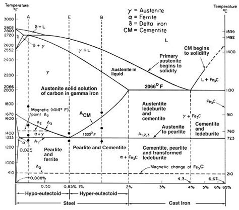
White iron is hard and essentially free of graphite. The metal solidifies with a compound called cementite, which is a phase that dominates the microstructure and properties of white iron. The carbides are in a matrix that may be pearlitic, ferritic, austenitic, martensitic or any combination thereof.
“White cast irons are usually made by limiting the silicon content to a maximum of 1.3 percent, so that no graphite is present and all of the carbon exists as cementite (Fe3C). The name white refers to the bright appearance of the fracture…” - https://www.britannica.com/technology/white-iron
High-chromium white irons are used for elevated-temperature service. High-chromium white irons and nickel-chromium white irons (Ni-Hard) are used for abrasion-resistant service. Other alloyed irons are used for corrosion resistance or elevated-temperature service. This iron is unique in that it is the only member of the cast iron family in which carbon is present only as a carbide. The presence of different carbides, depending on the alloy content, makes white iron hard and abrasion-resistant but also very brittle.
Malleable iron – Cast Iron Fittings, Brackets, Clamps
In malleable iron, the graphite occurs as irregularly shaped nodules called temper carbon because it is formed in the solid state during heat treatment. The iron is cast as a white iron of a suitable chemical composition to respond to the malleabilizing heat treatment. ASTM Specification A220 defines eight grades of pearlitic malleable iron with increasing strength and decreasing ductility. Specification A47 is for ferritic malleable iron, which has the lowest strength and highest ductility. Malleable iron is ideal for thin-sectioned components that require ductility. Ferritic malleable iron is produced to a lower strength range than pearlitic malleable iron but with higher ductility. It is the most machinable of cast irons, and it can be die-strengthened or coined to bring key dimensions to close tolerance limits.
Alloyed iron – The London Hammer
This classification includes gray irons, ductile irons and white irons that have more than 3% alloying elements (nickel, chromium, molybdenum, silicon or copper) but no carbon.
Malleable irons are not heavily alloyed because many of the alloying elements interfere with the graphite-forming process that occurs during heat treatment.
These irons are classified as two types: corrosion-resistant and elevated-temperature service.
- Corrosion-resistant alloyed cast iron is used to produce parts for engineering applications that operate in an environment such as sea water, sour well oils, commercial organic and inorganic acids and alkalis.
- Elevated-temperature service alloyed iron resists formation and fracture under service loads, oxidation by the ambient atmosphere, growth and instability in structure up to 1,100F (600C). The ability to cast complex shapes and machine alloyed irons makes them an attractive material for the production of components in chemical processing plants, petroleum refining, food handling and marine service.
The only thing that would benefit a tool being corrosion-resistant is if it were to be utilized in a marine or otherwise wet environment. Obvious, if the selection of the material was intentional, as it most certainly was, then the hammer was intended for use in areas where corrosion would be an issue. That implies that the hammer was designed for use in marine environments.
This hammer was designed for use in a marine environment.
Hammer Head Density
Density tests indicated that the casting was of exceptional quality. The density of the iron in a central, cross-sectional plane shows the interior metal to be very pure, with no bubbles. Obvious this object was cast from a mold and was done so in a facility of great metallurgical capacity. This must be the case as it is not easy adding chlorine gas to molten iron. Think about the problem. How would YOU add dangerous and corrosive chlorine gas to a cauldron of molten iron?
The people that made this hammerhead did so with many years of experience with this particular alloy. If this is a contemporaneous material in a contemporaneous hammerhead, then there would be other products, not necessarily hammerheads that would use this exact formulation of metal alloy. Are there?
I ask the reader to try to identify other examples of this particular alloy so that we can close out this matter.
Processing & Fabrication Concerns
It is not just that the material composition is odd, well it is VERY odd, but that it needed very specialized equipment to fabricate the part. It’s not that it was cast, but it had post machining processing as well. It is obvious that this part was not made in some crude backyard factory, or blacksmith shop. It was made in a well-equipped processing facility.
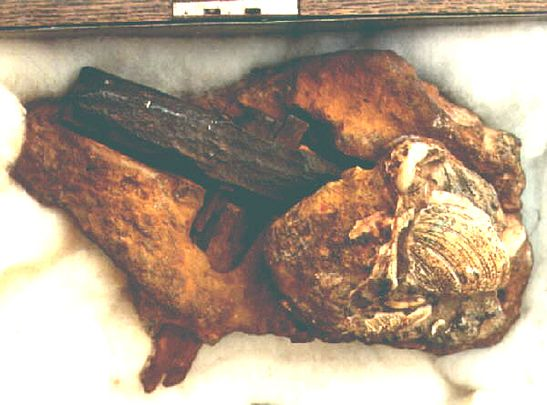
The part needed to be cast. That was easy; sand casting has been around for a long, long time. The problem is that there is an unusual quantity of Chlorine involved.
Chlorine is not an everyday material that you just add to the molten material in the ladle. Chlorine is dangerous and very corrosive. Exposure to chlorine is irritating to the eyes, nose, throat, and mucous membranes. At high enough levels, exposure could cause serious injury or death. It is highly corrosive and reacts violently (think explosion) with petroleum products such as gasoline, diesel, oil, solvents, and turpentine.
Chlorine can also react with carbon monoxide and other combustion products to make highly toxic and corrosive gases. You DO NOT smoke around chlorine, nor do you have any kind of smoke, soot or petroleum vapors near it.
Thus, any manufacturing process that adds chlorine to the steel must do so in a very safe and cautious manner. No leakages of the gas can be tolerated. There needs to be extensive quality controls, and the insertion of the deadly gas into the molten iron must be carefully conducted.
The reader is reminded that the “London Hammer” was found in the early 1930’s.
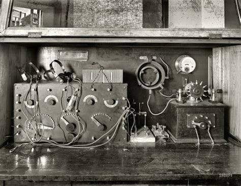
Iron and steel factories in the 1930’s were dark, dim and smoky places. Gas fumes were everywhere as you had large locomotives carting ore and ash. You had internal combustion engines motoring about, and dusty working conditions. Carbon monoxide was everywhere. (Not to mention smoking workers on their cigarette breaks.) These kinds of gasses react explosively with chlorine gas. This was in the 1930’s remember. If this hammer was made before then, as the statists presuppose, then the conditions were much, much worse. I guess that the statists have never been to a steel factory, eh?
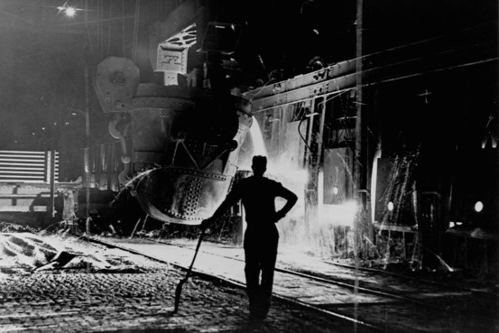
In short, in 1933 the production environment was too dangerous to even attempt to add chlorine gas to molten iron. It is highly unlikely that there was a safe, sterile, clean environment to infuse iron ingots with the deadly, toxic and dangerous chlorine gas during the American civil war.
Stainless Steel
Steel that would not rust was unheard of until 1913.
If there was some factory producing any kind of iron objects that would not rust, they would have been well known. Obviously there weren’t any, as the hunt to find non-corrosive steel continued in earnest until the invention of stainless steel.
It is reported that the first true stainless steel, a 0.24% Carbon, 12.8% Chromium ferrous alloy, was produced by Brearley in an electric furnace on 13 August 1913. He was subsequently awarded the Iron and Steel Institute’s Bessemer Gold Medal in 1920. In 1924, Hatfield patented the 18-8 stainless steel, 18% chromium and 8% nickel. This austenitic stainless would soon rise to become the most popular and widely used type of stainless steel. Adding titanium to the 18-8, Hatfield is also credited with the invention of 321 stainless.
The material in the head of this hammer is a “stainless” steel, but it is NOT any known alloy of steel. The Chlorine and Sulfur in it prevents corrosion. However, that is not the way stainless steel is made anywhere in the world today. It is a “stainless” iron alloy.
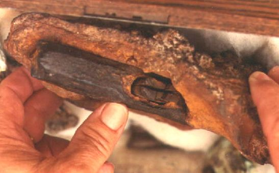
Wood in the Handle Grip
The handle eye is partially fossilized and coalified with quartz and calcite crystalline inclusions, oval shaped, and roughly 1″ x 1/2”.
The wood has not been identified.
There hasn’t been any kind of studies that I am aware of on composition or radiocarbon analysis. However, I caution the reader on this. The accuracy of radiocarbon analysis decreases with age and is only good for 50 thousand years or so.
"Despite its usefulness, radiocarbon dating has a number of limitations. First, the older the object, the less carbon-14 there is to measure. Radiocarbon dating is therefore limited to objects that are younger than 50,000 to 60,000 years or so." -Carbon Dating
While I know that anything is possible in this world, I find it difficult to believe that a piece of wood can become fossilized and coalified within a few years. For after all, that is the statist argument. The argument is that this object of metal was [1] of recent manufacture (to the 1930’s), and [2] local conditions somehow fossilized the wood and [3] turned the material surrounding it into rock.
Wood petrifies when it is buried in silt deposited by flooding rivers or seas and silicates, such as are found in volcanic ash, dissolve and impregnate it. These substances replace the hydrogen and oxygen portions in the wood and begin the petrifaction process by silicification. This may produce very solid opal or quartz minerals. The final product is approximately 5 times as heavy as common pine wood.
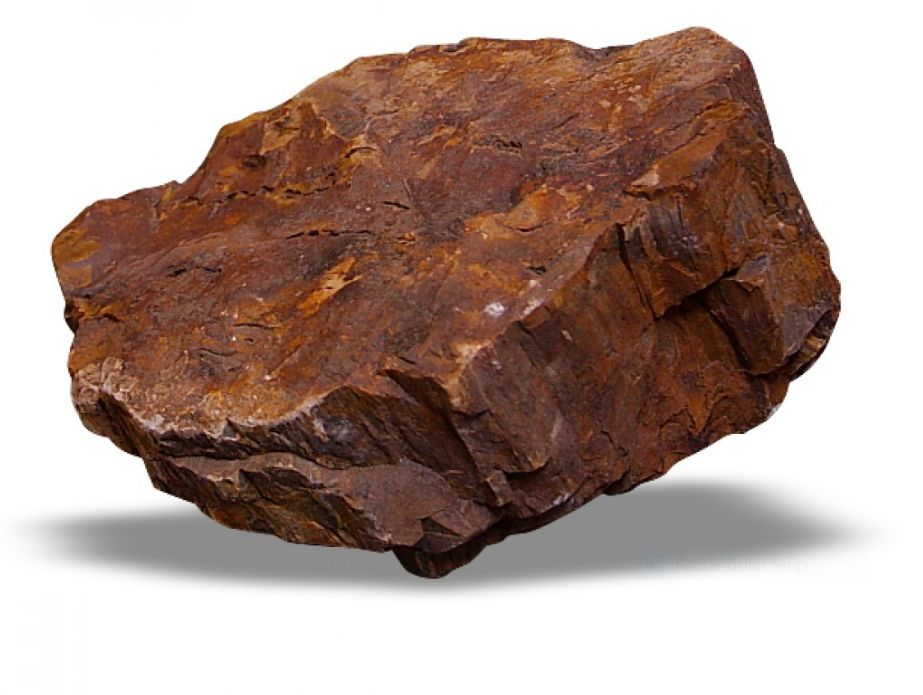
It is difficult to determine which kind of wood was used. The wood is fossilized, and the photographs available do not permit the kind of study that is necessary for full investigation of the wood. However, we can make some general determinations. Based on the photographs, the “tree rings” shown at the eye of the hammer appear to be near to each other (less than 1mm from each other) and thus, resemble a hardwood.
Today, tree rings that are close together are typically suggestive of hard woods. While tree rings that are far apart are typically suggestive of soft woods. This is interesting, but it doesn’t tell us much, except to say that the wood could have been similar to a modern softwood. Also, from what is observable, there are no knots in the wood.
Yet, even this tells us something…
History of Wood 101
Let’s take a look at the wood used in the handle. Well, back in 2011 discovery in the Canadian province of New Brunswick yielded the earliest known plants to have grown wood, approximately 395 to 400 million years ago. So we do know that there were wood trees long before the time of the formation of the local strata. This is refreshing in that it puts a “new face” on what the plant life was at that time.
At the beginning of the Permian, plant life consisted of various ferns, mossess and similar plants. Eventually the swamps and low areas full of huge ferns and similar plants were replaced by new types of plant life. In many Permian forests the tree canopy became dominated by cordaites, tree ferns like Psaronius and horsetails like Calamites. Back then, most of the plant life still looked much like ferns and mosses. However, they began to evolve.
Seed ferns (Pteridosperms) like Medullosa also accounted for a good percentage of the plant life while the role of lycopsids decreased. The best-known seed plants alive today are the conifer trees such as pine, spruce and larch. Indeed, these seed plants, such as conifers became more diverse and more abundant towards the end of the Permian. In some locations Dadoxylon, are among the largest and most numerous of tree trunks found in this time period. I have read that Arizona’s “petrified forest” was a forest of the first conifers, or gymnosperms. And, all those exposed fossilized logs are the crystallized remains of the tree species Araucarioxylon arizonicum.
In my mind, I like to think of the Permian (300 to 250 million years ago) to be when the first softwoods began to replace all the tall ferns and grasses. They quickly began to dominate the forests. Within a few million years, many softwoods populated the forests all over the world. This continued until the evolution of the hardwoods came about.
The advent of the hardwood (angiosperm) began about 150 million years ago in the early Cretaceous. That was a 100 million years after softwoods. They appeared at about the same time geologists believe that the earth started to break apart from the single continent called the Pangaea. Early into that Tertiary period, hardwoods exploded and diversified themselves on each new continent.
If the London Hammer was made and lost in the Eocene, then it is very possible that the handle could have been made out of some sort of hardwood.
- Those claiming earlier dates older than 150 million years cannot support the contention that the handle is made out of hardwood.
- Those claiming dates older than 300 million years cannot support the contention that the handle was made out of either hardwood or softwood, as before that time, all plant life consisted of ferns and fern like plants.
Dating of the Wood
I, of course, would absolutely welcome the dating of the wood. Though, it would be pretty fucking difficult noting that it is a fossilized stone, and there are limits to radio-carbon dating.
You fucking cannot perform radio-carbon dating on a God-damn stone. For Pete’s sake! So, imagine my interest when I read this;
“A recent radiocarbon-dating test was performed on a sample of wood removed from the interior of the handle. The results showed inconclusive dates ranging from the present to 700 years ago.” -Ancient-Wisdom.com
I followed their link for proof, and poof! It dead ends. Bummer!
Well, that wasn’t helpful. So I went a looking elsewhere.
The current owner of the hammer is Mr. Carl Baugh at the Creation Evidence Museum. He has NEVER authorized any testing of the wood in the handle. Nor has there EVER been any testing on the wood. Anyone who makes claims that the wood has gone through testing is lying.
No one has ever tested the wood. So…
I guess that if the scientific statists can’t convince anyone of their narrative, they must resort to lying.
Sheath around the Hammer Head
The portion of stone surrounding the hammerhead also seems to present abnormalities. There seems to be a cavity of sorts that suggest that there might have been some sort of sheath covering the hammer. The sheath has since disappeared for one reason or the other. We are unable to determine anything about the sheath other than it might have been some sort of wrapping.
Shellfish
Surrounding, connecting, and attached to the rock containing the hammer are a number of shellfish.
These are bivalves that clearly have the same appearance and shape as bivalves of the Eocene. For those readers that don’t know the difference, bivalves evolved over time. Creatures all evolve over time, and general appearance can be helpful to identify a specific point in time.
A seashell from 50,000,000 years ago looks quite different from one found on the beach outside your house today.
By looking at the shells that are embedded in the rock surrounding the hammer, we can date the evolution of those creatures. And low and behold! They match the strata of the rock that the hammer was found in.
Imagine that!
In any event, shellfish no longer thrive in the London, Texas region. They only thrive in open water, not in hot and dry desert regions. Unless someone carted this rock from the ocean in the Gulf of Mexico and placed it on the rock ledge, the shellfish that covered the rock of the London Hammer were from the Eocene.
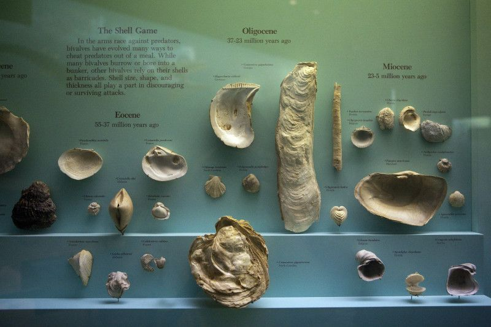
Protective Coating
"research continues into the unusually shiny transparent layer which surrounded the hammer when it was discovered and why it did not corrode for several months." - Mackay, John (ed). "Ordovician Hammer Report". Creation Ex Nihilo Feb. 1984. Vol. 2, No. 3.
I know nothing about this. What I do know is that surface treatments of the early 1930’s did not include thin transparent or clear surfaces.
The Eye of the Hammer
All hammers need a mechanism that holds the wooden handle in place near the hammerhead. This device or mechanism is called the “wedge”. It is typically a metal sliver or wedge shaped piece of metal that is hammered into the top end of the wooden handle near the hammerhead. This particular area is known as the “eye”.
Typically, it is a cast metal part, though it can actually be just about any kind of material as long as the material is harder than the wood handle. Typically, it is hammered or more often, pressed into place. The material conventionally is often steel or a cast iron part.
Looking at the eye of the hammer tells us that the wedge had a width around 10mm to 15mm. We do not know the depth of the wedge, nor the thickness. We can guess proportionally based on contemporaneous conventional wedges. That doesn’t help us much.
A study of the eye of the London hammer also shows clearly that only one wedge was used. It was located in the center of the handle end within the “eye”. However, it has since disappeared. We can only assume that the wedge disappeared after the time the London Hammer was lost. Otherwise, the hammerhead would have detached from the hammer, and the two parts would not have been found together in the state that it was discovered in.
Therefore, there is a high probability that the wedge was encapsulated along with the entire handle at the same time. As such, and because the wedge was not found when the rock was cracked open, it is highly reasonable to expect that the wedge corroded into dust while encapsulated within the rock.
This fact tells us some important things;
- The wedge was made of a different material than the hammerhead.
- The wedge had a different negative electropotential than the hammerhead, and thus possibly acted as a Sacrificial Anode comparatively. This is much like the way zinc is used on steel ocean vessels.
- The galvanic series table clearly shows that corrosion resistant metals have a cathodic (or more noble) role in the comparative chart. This tells us that when two metals are placed in close proximity to each other, the metal that is anodic (or less noble) will corrode first. From established tables we can see that there are many materials that are less noble than corrosion free materials.
- Thus, it is probable that the material that the wedge was made of was possibly made of plain carbon steel, aluminum, zinc, or magnesium. (Though other materials are also a possibility.)
If the London Hammer was contemporaneous, as the scientific statist’s state, then we know…
- Production quantities of aluminum were available as early as April 2, 1889, when Charles Martin Hall patented an inexpensive method for the production of aluminum.
- It was extremely expensive, and not used in any kinds of mass produced products.
- It was considered a precious metal until 1914.
- Limited applications for aluminum filtered into specialized products beginning in the middle 1920’s.
- Since the London Hammer was discovered in the middle of the 1930’s, it is highly unlikely that production quantities of utility-grade aluminum wedges were used in a utility hammer, and that aluminum completely corroded into dust within a ten-year span of time.
Which leaves us with magnesium. Magnesium would need to be in some form of alloy and given it’s cost and material properties it is highly unlikely that it would ever be considered as a wedge in a hammer. it is decidedly NOT a utility grade material.
Thus, it is reasonable to assume that the wedge was made either out of simple low carbon steel, or aluminum. If it was made out of aluminum, it is unlikely that it is a contemporaneous object. My bet is on a different alloy iron (either as a low carbon steel, or something else), or barring that as an aluminum. In any event the metal or material in the wedge was more anodic than the hammerhead.
The metal or material in the wedge of the London Hammer was more anodic than the hammerhead.
Conventional Hammerhead Design
Today, and for the last one hundred years, hammerheads have been made of high carbon, heat-treated steel. This is for strength and durability. They are also heat treated. The heat treatment helps prevent chipping or cracking caused by repeated blows against other metal objects. Certain specialty hammers may have heads made of copper, brass, babbet metal, bronze and even rubber.
The steel hammerhead is conventionally made by a process called hot forging. A length of steel bar is heated to about 2,200-2,350° F (1,200-1,300° C) and then die cut in the shape of the hammerhead. Once cut, the hammerhead is heat treated to harden the steel.
The problem with this particular hammerhead is that the apparent manufacturing process was completely different. The hammerhead is not made of steel, it was apparently not hot forged, and it was not heat-treated. Instead, it was cast out of a mold using an unusual metal compound, allowed to cool and then machined to shape. After machining, it was apparently coated with some kind of clear coating. It is an unconventional manufacturing process for metal parts.
The hammerhead on the London Hammer was fabricated using a very unusual and unorthodox manufacturing process.
I would welcome a metallurgical study on this hammerhead to help us identify the process involved. As I am sure that it would tell us much more than I can presuppose.
18th Century Miner’s Hammer
There are those (scientific statists) who claim that this is just your ordinary hammer used by miners in the 18th century. If so, then it was an awfully tiny mining hammer. If I would have used this hammer when I worked the mines, I would have been relentlessly mocked.
I am sorry to use coarse vernacular, but this isn’t a fucking mining hammer.
At best, it’s a jeweler’s hammer. It’s way, way, WAY too tiny. Maybe it was designed for the seven dwarves to mine gold with.
“The hammer in question was probably dropped or discarded by a local miner or craftsman within the last few hundred years, after which dissolved limy sediment hardened into a nodule around it.” - Glen J. Kuban
And,
“Cole also concluded that, judging by its style, the artifact is a 19th century miner's hammer.” -John Cole as reported in rationalwiki
And,
“The Hammer is identical to commonly used 19th century miners hammers, of American provenance.” - http://www.ancient-wisdom.com/ooparts.htm
Apparently, the intellectuals have made their “official” pronouncements.
I guess that they figured all this out while they were drinking a latte in Starbucks. I’m sure they might have gotten a second opinion from the pretty girl behind the counter with the nose piercing large enough to drive a truck through. Or maybe they simply yelled upstairs and asked their mother what her opinion was.
"What I learned is that it's arrogant to be certain of anything. The world is a complex place and only idiots or assholes think they know it all." -Lisa Gardner
Yessur.
That’s a “mining hammer” said the young’un who wouldn’t know the difference between a dragline, a break line, Gunite or a tipple maul. Probably never worked a good lick of work in their life.
No dirt between the God-damn fingernails, I’d guess.
Hey, I’m just being “real”.
How about doing this; get a “Jewelers Hammer” (which is approximately the same dimensional size and hammerhead weight) and try to break a chunk of granite, basalt, or limestone with it. I am serious. Do it. Every single one of these statists who claim that this is a friggin’ mining hammer has NEVER picked up a hammer and even tried to break up a rock with it. Yet, here they are. Professing their knowledge to the world when they haven’t even doing the physical work that they so profess to know.
This reminds me of an instance when I lived in Mississippi.
One of the projects that I was working on was designing a new coffeemaker. It was intended to revolutionize the coffee industry. (it, like so many other design projects, eventually gets canned or canceled. In this case Sunbeam-Oster bought a large company up North called Mr. Coffee, and the project was shelved.) Anyways, I had hired an Industrial Design firm to help us brain-storm some ingenuous solutions in packaging (external design) of the new coffee maker.
After paying them around $50,000 they came back two months later with a great presentation. They had all kinds of ideas. They had a very nice presentation. They had nice slides, and a great brochures.
However, they had not even bothered to try any experimenting with coffee beans. They did not bother to cook the coffee, or roast their own coffee beans. Not one single person had ever had coffee made from raw coffee beans, or a “French Press”, or anything other than “drip coffee”. Only one had ever had “Percolated coffee”.
They were “book smart” but had no physical “hands on” experience. They did not go out of their way and actually experiment. They just sat behind their computers and spewed out ideas. It was useless. It was worthless. We couldn’t use any of their ideas. Have you, the reader, ever had a similar experience?
To understand something you need to be able to touch it, taste it, feel it, smell it. You need to see it with every one of your senses.
To understand the size of 1 mm, you need to look at the thickness of a dime. To understand what the length of one inch is you need to look at your thumb. To fully appreciate how heavy one hundred pounds is, you need to lift it and carry it across the room.
Typing meaningless words on a university campus is worthless and helps no one.
Hey guys! This is what a real and actual “mining hammer” looks like…
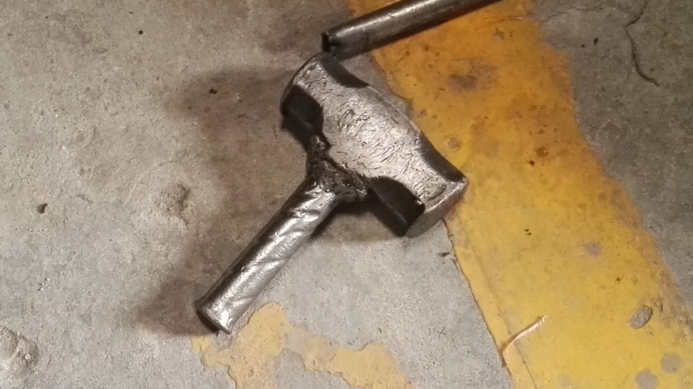
Stylistically Similar Hammers
In almost all of the scientific statist articles, they lay claim that the London Hammer is “similar in style” to contemporaneous mining hammers. Yet, they don’t provide any examples to go by. You would think that it would be an easy thing to do, now wouldn’t you?
- For something to be “identical” to something else, ALL the major characteristics must be the same.
- For something to be “similar” to something else, MOST of the major characteristics must be the same.
The defining major characteristics of the London Hammer, as best as we can determine, are;
- The hammerhead dimensional relationships. (The proportions of the length x width x height x cross sectional area of the face x thickness of the bell/poll x eye width within the hammerhead.)
- The length of the hammerhead.
- The width of the hammerhead.
- The hammerhead weight.
- The shape, dimensions and the unique features of the hammerhead cheeks.
- The hammerhead material composition.
- The face and poll construction.
As far as I can determine NONE of these characteristics match those on any contemporaneous mining hammers. Which, of course, is one of the reasons why I rant on so much about the scientific statists. Their claims are like saying that a cement-mixer is the same as a Porsche 911 simply because they both have wheels.
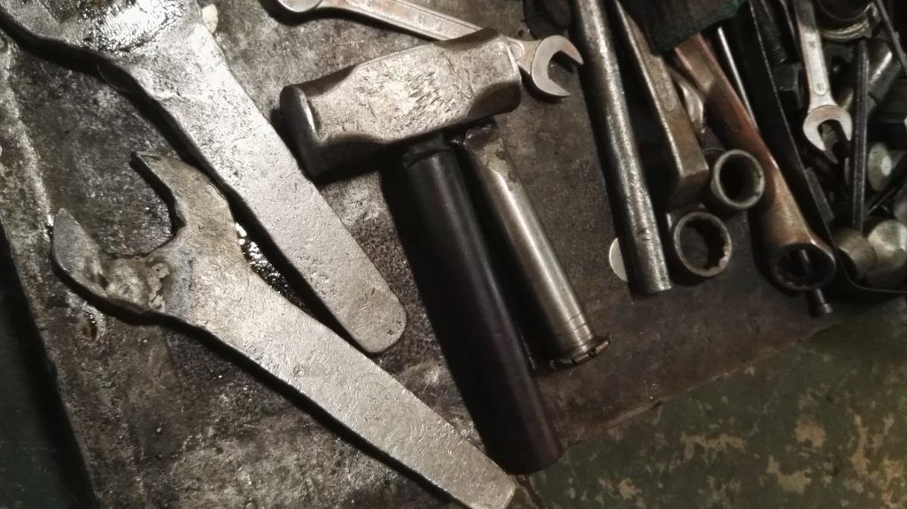
My Search
If these statements are true then there should be records of similar hammers in catalogs from that period. It goes without saying. Yes? If it is typical…
So, I went a looking. My first stop was Sears & Roebucks. Which was, and continued for nearly a hundred years, the first stop in outfitting mining expeditions. I found nothing. I then searched Montgomery Ward & Company. Also, no luck. Then Bloomingdales. I couldn’t find anything. While I did find hammers, and I did find small mining hammers, none of the pictures illustrated shown a hammer in the same style and shape as the London Artifact. I also tried to locate vintage or antique hammers for sale on eBay. Nothing at all resembled this hammer. Which is odd as there are Scientific Statists who note,
“That the hammer is stylistically consistent with typical American tools manufactured in the region in the late 1800s.”
If so, then there should be some examples of “stylistically consistent tools” that the “experts” are referring to. I myself could not find any. I would most certainly welcome some examples.
(As an aside, what is an “expert” in this particular matter? Is it someone who has actually used a mining hammer? If so, then I actually am an expert. For I have actually used a mining hammer to mine with, and got paid for using it…not much, mind you, but yes, I am an expert in mining hammers.)
Remember boys and girls, termites look like ants to most people. However, they are not ants. They are completely different. We should never make snap judgments based on appearance alone. We should look at all aspects of a given mystery. We should not devote the bulk of our efforts to disprove the conclusions of another. Instead, we should study the mysterious object alone and not encumber ourselves with the opinions and thoughts of others.
"The less people know, the more stubbornly they know it." -Rajneesh
In the interests of science, perhaps there is someone out there that can find this object advertised in a vintage catalog so that we can put this matter to rest. It would be a welcome relief.
You have to give the statists some credit. Maybe they have seen examples of this particular tool lying about. So, I just had to do some investigation. So, I fired up the old internet search engine and went a looking. Here is what I found;
Photos of Vintage Hammers
I went on the internet and started to look for vintage or antique hammers used in mining. I tried numerous key words to this end, and I used different search engines. In almost all of the results that I have managed to compile, the hammers are substantially larger than the London Hammer is. Typically, the London Hammer is tiny, it is half the size of almost every single (single handheld) mining hammer or mining pick that I found.
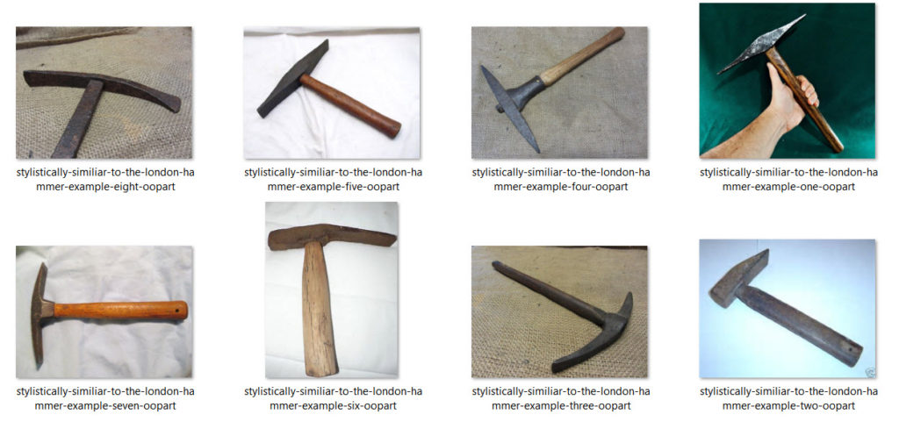
Why is this? If this is actually a hammer used in mining, then the people who used it were either dwarfs, children or tiny people of small stature.
Vintage Catalogs
As stated previously, I also looked into some vintage catalogs to see if there were any hammers that were similar to the London Hammer. I was a bit disappointed. As the catalogs were line drawings, with no comparative scales shown. They had some rough drawings that could possibly look something like the London Hammer, but they could also resemble any of the above hammers just as easily.
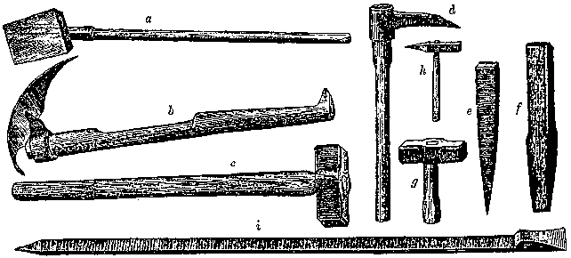
Man, for something that “easily resembles local mining hammers”, I sure as heck couldn’t find any examples anywhere.
I guess that my definition of “easy” differs from that of the arm-chair statists.
"Keep learning; don't be arrogant by assuming that you know it all, that you have a monopoly on the truth; always assume that you can learn something from someone else." -Jack Welch
Photos of Miners
I also went looking at vintage photos of miners. In every case, I was unable to find a miner holding a hammer that looked like the London Hammer. Most miners used large sledgehammers and picks to break the rock up. The smaller hammers were used in tight spaces and confined areas.
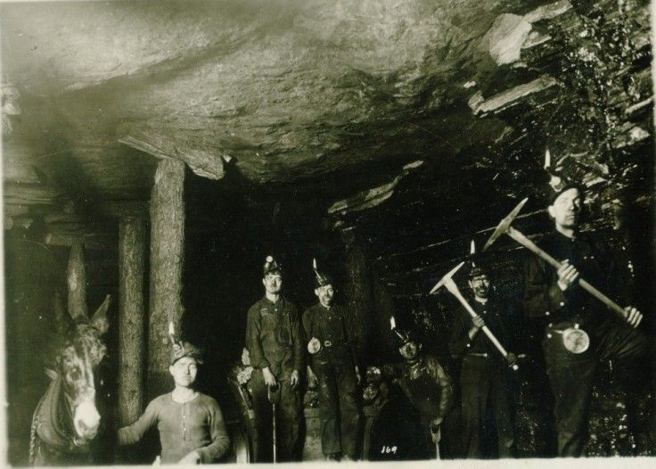
Of course, if you have never worked in the mines, or used a hammer to break rocks up you wouldn’t have any idea of their utility. After all, unless you tried to smash two stones together, you just couldn’t appreciate the importance of a hammer.
The only way that you could get an idea of what a hammer was or how it is used is from your friends or family who work in the mines. You might listen to their stories and try to imagine what a mining hammer might look like. Barring that, your only window to mining might be through the lens of Hollywood.
I pretty much believe that this is where they got the idea that this was a mining hammer…
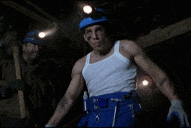
The internet has made the opinions of everyone available to the world. As a result the internet is flooded with ideas and opinions, of which most are based on a fantasy. That is ok. There is nothing wrong with living a fantasy. that is, of course, up until your fantasy hits the “brick wall” of reality.
Dudes, if you want to believe in evil shape-changing reptilians, and enlightened spiritual beings from Sirius, just go ahead. If it helps you through your day, I say go for it. But if you really want to understand our reality, and YOUR role in it, then you had best broaden your horizons a tad bit.
The world is NOT at all what most people think it is.
Mines
You would think that a scientific statist would do their “due diligence”, right? That they would do their homework. If you are going to say something is a particular item, you would present examples. You would discuss where it was made and how. You would show how it was used and where.
However, NOT ONE SINGLE scientific statist did that. They just pull out some passages out of context, and arrange it in jargon filled treatise.
Texas is full of mines.
So, it should also be full of hammers.
It should be full of photos of people using hammers. It should be full of old used hammers. It should be full of abandoned mines with “stylistically similar” hammers discarded and lying about for anyone to pick up.
That is not the case.
You would think that the difficulty in finding exact duplicates of an obviously mass produced object would be easy to do. Especially in Texas.
Well, let’s not waste any time. Get your gloves, sturdy working trousers, a GPS and get started searching. Here is a link to a map of every mine in Texas. Go for it. Let’s find duplicates of the mystery OOPART London Hammer; Let’s go!
Hand Sledge
One of the most common things that occur in the mines is to use an ordinary sledgehammer, and cut the wood down to one-fourth the length. (You saw it down with a wood saw. One knee holding the handle down on the ground.) It becomes a “handsledge” or “hand mawl”.
In Pennsylvania and West Virginia, we simply referred to it as a “mawl” or the “handsledge”. This makes it easier to knock out the rocks and debris in tight locations where a normal sledgehammer could not fit.
A handsledge has the exact same style and type of a hammerhead as a normal sledgehammer has. The only difference is the length of the handle is much shorter. Of course, the hammerhead for both types of hammers is quite heavy and robust.
I can see where a village idiot might think that the London Hammer was a handsledge. Maybe for a dwarf or a midget, it is. However, seriously the proportional variances from the hammerhead length, to width and cross section are not stylistically compatible with anything.
The “face” of a handmawl is around four to six times (4x to 6x) that of the face of the London Hammer. The “head” of a handmawl is around two to three times (2x to 3x) as large as the face of the London Hammer. Dimensionally the London Hammer has no business inside a mine or part of any kind of mining operation. At best, it is suitable as a jewelers hammer inside of an office space in downtown Cairo.
My Opinions
This artifact has collected the opinions of everyone who has encountered it. There are those who discount it as “just an old mining hammer”, yet they fail to provide even the simplest examples of what they are referring to. You would think that they would dredge up a picture of a vintage mining hammer to illustrate their point. (Like they did with the Dorchester Pot.) Now, wouldn’t you?
I would. But, then again, I actually WORKED for a living.
Well, as you can see. I did all the “heavy lifting” in this regard.
There are others who state that this artifact exists as evidence to support their claims for their own narrative. This narrative can be prior civilizations of great technology, pre-flood Biblical environments, and extraterrestrial visitations in the deep past. As much as I truly enjoy these alternative speculations, I am afraid that there isn’t much that the hammer can used to support these assertions. All that it can do is point to a time outside of the accepted norm where there was someone who designed, made, and used a hammer. I am sorry guys.
Here are my opinions.
The hammer does NOT look like a mining hammer (a “Prospector’s Hammer “ or “Brick hammer”) at all.
The closest hammer that it looks like is a “tack hammer”.
The size and configuration is not suitable for looking for rocks and chipping away at them. If the hammerhead were thinner, it might resemble a miniature “Railroad-spike maul Hammer”. However, it is obvious that it is not any of these known hammer types.
The hammer is small. It is tiny.
It is substantially smaller than most of the single-hand hammers that have ever been used for mining. This also goes for hand-held picks. It is too small. That in itself should mean one of two things. Either [1] it is not a mining hammer, and instead used for some time of specialized work, or [2] it is a hammer, but the people who used it was of small size.
The hammerhead has a small dome on one end, and what appears to be a kind of concave end at the other. The presence of these features clearly states that the object had a specialized purpose.
This was not a general utility hammer.
But what was the purpose?
The closest thing that I can think of is as a hammer to knock off shellfish (such as clams, mussels and oysters) off of rocks at low tide.
Here, in China, we commonly see locals using small hammers such as these to collect and gather shellfish. They go down into the water at low tide. Then with the water up to their knees, they stand by the rock. Using a hand to brace themselves, they use the other with a hammer to solidly tap the shellfish loose from the rock. Sometimes they also use a small screwdriver (with a bent end like a tiny claw) to pry the shellfish off. Which, if you think about it, looks a little similar to the concave end of the artifact hammerhead.
The problem with this possibility is the mystery of how a shellfish hammer ended up in the middle of a Texas desert in the 1930’s. The last time this area was near shellfish was during the Tertiary period around 40 million years ago.
This is curious. It is curious because this happens to be not only the age of the rocks in that area, but also indicative of the shellfish found attached to the stone that the hammer was found in.
At this time, the area was covered in a low shallow sea. The tides would rise and fall, and the rocks in the area would support all kinds of shellfish.
Now, 40 Ma is a long, long time ago. It was when mammals just started to evolve. At that time they were mostly smaller and with longer legs. This was after the age of the dinosaurs, but before the time of the large mammals. Early humans did not exist though there were proto-primates at this time.
Proto-primates looked a little like a cross between a monkey and a squirrel.
What that means is that humans had yet to evolve from apes. This is because apes had yet to evolve from proto-primates. Yes, that was a really long time ago indeed.
So thus, we have our mystery.
How can a specialized (by the head design) marine-grade (by the composition of the hammerhead) hammer designed for dislodging shellfish (size, shape, and design) be designed, fabricated, used and lost in a shallow sea long before the progenitors of proto-humans ever existed? This is the question that should be asked when we study the material composition, fabrication concerns and style of the hammer.
This OOPART is a specialized shellfish dislodging tool. The metallurgy of the object is very interesting and very telling. The head of the tool has a hardness generated by the unusual percentage of sulfur, and anti-corrosion properties due to the passivation of chlorine during the casting process. It was cast, forged, machined and possibly heat treated using an oil-quenching process under pressure. As the object was located encased in shellfish remains, at local geographic strata dated to 40 million years before humans walked the Earth, it is reasonable to conclude that it was lost during the harvesting of the local shellfish in the region. It is considered an OOPART because humans are arrogant and cannot believe that other tool-making creatures lived on the earth long before humans evolved.
And, that is my opinion.
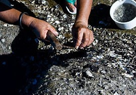
A final word
This is pretty much what a 75 to 100 year old hammer looks like…
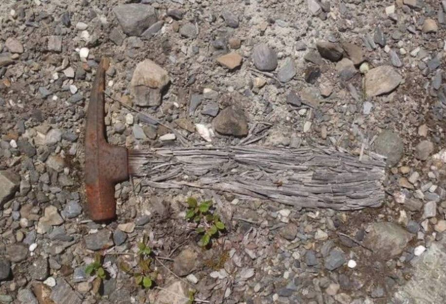
Request for Help
I have a tendency for sarcasm, I know that. However, I would like to know what the story is on this hammer. I tend to get sarcastic when someone just dismisses something away without at least addressing that there are some issues or mysteries that need to be resolved.
- If you want to say it looks like something, then pull that object out so we all can compare.
- If you want to say that it is stylistically similar to a certain design, then show us the designs and styles that you are referring to. Let us all see the stylistic elements that you are referring to. Enumerate them.
- If you want to say that a ten or twenty year old piece of wood can be fossilized, then show us examples of a ten or twenty-year old section of fossilized wood. Don’t reference a journal discussing a 45,000 year old example.
- If you say that the metal is common then, go ahead and [1] show everyone examples of the same metal being used elsewhere. Show us [2] the factories that used that process, and [3] what the process was. Then, of course, [4] show us the molds used, and [5] other examples of such an obviously mass-produced object.
Don’t just make a statement, and run away like a coward or a five year old petulant child.
Man up.
Cowards spend all their time trying to disprove things. Only cowards do this. They are the people who sit in their “Ivory Towers” and figure out things for others to do. Meanwhile it is us workers that have to get our hands dirty. We’re the ones carrying the water. So don’t piss on our legs and tell us it is raining.
I worked in the mines. This is not a fucking hand sledge. I’m not a God damned idiot. Neither is anyone else. If you don’t know, then shut the fuck up. It is the leaders; the makers, and the shakers that open up doors, and show us the truth. Be a leader.
Let’s see [1] how chlorine was added to molten iron around the days of the American Civil War. Let’s see [2] photographs of the process used to add chlorine to the molten iron. These process are documented, you know. Pull them out. Do your homework goddammit.
Let’s see [3] photographs of miners using this ridiculously small hammer at the mines. Or, barring that, [4] ANY type of tiny tool in a mine. And, please pictures of the seven dwarfs from Walt Disney does not count. Let’s [5] identify the species of the shellfish that was found clinging to the metal hammerhead.
To this end, I would hope that others help all of us out here.
- Can someone find a photo, and advertisement showing the contemporaneous “mining hammer” that this is supposed to be kin to?
- Can someone provide examples that show that this hammer fits a regional style or shape common at one time in this area? Then can you point out and enumerate the stylistic similarities for us? (For instance, the [1] hammerhead dimensional relationships, the [2] hammerhead weight, the [3] unique features of the hammerhead cheeks, [4] the hammerhead material composition, and the [5] face and poll construction. All five characteristics must be identical in “stylistically similar” hammers.)
- Can someone assist in the determination of the wood composition and history?
- Can someone please help in the heat treating and secondary operations of the metal?
- Can someone point out the local mining operations in the London, Texas region so that we can investigate the sites directly?
I am not a God. I cannot do this alone. I welcome any and all assistance in solving this mystery.
Maybe it is contemporaneous. Maybe it is from a time before the Biblical flood. Maybe it is from an extraterrestrial visitor. I don’t know. However, there are people out there (in internet-land) who do know some of these answers. I humbly request your help.
Conclusion
This object has a very unique material composition that is uncommon and difficult to manufacture. This object shows aging, and a presence within a rock that is suggestive of great age. While it has a general contemporaneous appearance, that alone should not be a reason to ignore the other curious aspects of this object. Those willing to discount this object as a modern object do so without proper study of the materials used in the object. The study would include not only the materials, but also how the materials and objects were manufactured and fabricated.
This object can tell us quite a bit about our reality and our world. All we need to do is listen to what it is trying to say to us with an open mind.
Thus…
A hammer designed to dislodge shellfish in marine environments was found encased in shellfish within rock that dated to when the area was a shoreline. It’s millions of years older than mankind.
The people or creatures that used this hammer were smaller, and had a smaller grip, but they knew their metallurgy, and possessed a very sophisticated method of iron alloy manufacture. This tool is specifically designed for the task of dislodging shellfish, particularity the types present on the shoreline 40 million years ago. Which would be mostly bivalves, and Cerith. We know this by the shape of the hammer bell/poll and face.
Take Aways
- The metal in the hammer is uncommon.
- The material in the hammerhead is not the same as what has been used in American-made hammers ever.
- The process used to make the hammerhead intentionally added sulfur to ease in machining.
- The material in this hammer does not contain enough carbon to consider it steel.
- Chlorine was added to the hammerhead, and that required a very elaborate and advanced production facility. That level of complexity was unlikely prior to the 1940’s.
- The combination of Sulfur and chlorine in iron suppresses the oxidation of the hammerhead. That is why it will not corrode like a low-carbon steel.
- The hammer was cast in a mold, and the metal alloy head was machined afterwards.
- The corrosive-less hammer was found approximately ten years after stainless steel was patented. It is not made of stainless steel but of a different composition that was not patented.
- The hammer was found in a hard mineral deposit resembling rock.
- The metal in the hammerhead is suggestive of an intended marine working environment.
- The rock contained bivalve fossils from the Eocene time period.
- The handle was partially fossilized and coalified.
- The handle appears to be made of a hardwood.
- The eye of the hammer possessed a wedge of a different material than the hammerhead.
- There are no similar hammers sold in any vintage catalogs that I have been able to research.
- This object is not easily explained away as a contemporaneous relic as its composition is suggestive of unique and comprehensive technologies not available in the 1930’s.
- The object appears to be a specialized “Shellfish Hammer” and appears to be quite ancient.
- All of this is speculative.
- It would be interesting to see if someone skilled in Psychometry or Retrocognition would have to say when holding this object.
FAQ
Q: What is the London Hammer?
A: It is an OOPART (Out Of Place ARTifact) that cannot be explained by conventional knowledge and understanding. It is a hammer that was found within a rock. The rock is much older than humanity is.
Q: Where is the London Hammer?
A: The object has been donated to Baugh’s Creation Evidence Museum where it is now on display.
Q: Who made the London Hammer?
A: No one knows. Evidence is suggestive of a great age for the object. We (officially) have no knowledge of any civilizations older than humanity. Thus who made it is speculative. It comes from a time long before human history.
Q: How old is the London Hammer?
A: The hammer was located in strata that have been dated around 40 million years. Scientific statists refuse to accept this, and argue that the object is contemporaneous. They have even gone as far as to make up stores that it has been tested and that the dates are contemporaneous.
Q: How big is the London Hammer?
A: The metal hammerhead is approximately 6 inches (15 centimeters) long and has a diameter of 1 in (25 mm). The wooden handle is broken so it is difficult to determine what its original length was.
Q: What is the London Hammer made out of?
A: The hammer has two components. The hammerhead is an iron alloy consisting of 96.6% iron, 2.6% chlorine, and 0.74% sulfur. The wooden handle material has not been identified, but appears to be a hardwood.
Q: How was the London Hammer dated?
A: It was never dated. There were no tests on the hammer that could be used to obtain a date. The rock from whence it was extracted from appears to be 40 million years old.
Q: Does the hammer prove that there was a Biblical flood?
A: No. It does not prove anything.
Q: What should we do if it is discovered that this hammer was contemporaneous and lost in the 1930’s?
A: Well, we should find the owner. They would be old, but might still be alive. They could tell us how they lost the hammer and what they did to it to make it look so old. Maybe they pissed on it after eating saltpeter and that fossilized the handle.